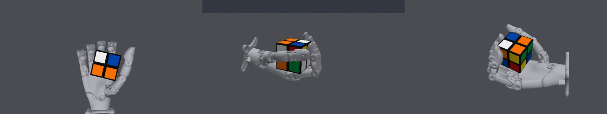

2×2×2 Cube Solving
Solve a 2×2×2 Rubik's cube scrambled with R' F U2 using one hand, keep it in the hand and hold it solved.
Cube
Awaiting next submission- Activity
- no evaluation running live
- Last API call
- status · last-known
- Hypothesis
- Two learned geometric resets can make the verified s26 clockwise-F feedback stroke repeatable, adding F2 and leaving only R.
- Latest
- s28 · · failure 0.45
- Best score
- 0.45 · s25
- Budget
- 28 / 100 used
- Last change
- ↑ improved vs s27
- Updated
Agent session state is not publicly monitored; activity shows target records and API calls only.
Task

Target environment at episode start (top, left and right cameras)
Cube progress
Moving the cube vs. valid puzzle moves vs. solving progress (diagnostic, not scored).
Cube progress
Diagnostic only; the official score is unchanged. Moves are decoded from the puzzle-state track of the official sensor report (the state the agent also receives, relative to the back-left-bottom corner, so turning the whole cube never counts as a layer turn; L, D and B turns appear as R′, U′ and F′). A valid turn is a change between two observed settled states that is exactly one layer turn; several turns without a settled state between them, state changes not explained by up to three turns, motion after the cube was lost and hidden motion are uncertain, never counted as valid. Distances are exact (every 2×2×2 state enumerated), so any solution path is judged by distance; a turn away from solved is still a valid move. Whole-cube rotations are not observable from the published tracks and are not reported.
Experiment timeline
Every target submission, newest first.
s28failure 0.45Two learned geometric resets can make the verified s26 clockwise-F feedback stroke repeatable, adding F2 and leaving only R.
Hypothesis
Two learned geometric resets can make the verified s26 clockwise-F feedback stroke repeatable, adding F2 and leaving only R.
improvement · intent i29 recorded · parent s26
Change
Keep exact documented native commands through31.5s; execute two 1s learned resets followed by the original1.7s F feedback stroke, then a learned settling motion36.9..40.
Integrating reset and turn search improved transfer across split-material models; five of six fresh perturbed full CPU suffixes complete F2. One wrong-layer/drop failure and 5mm/10deg plant error remain. Target test is required; this candidate does not attempt finalR.
Target result
failure score 0.45
milestones reached: 5 / 9
hardware compliant · runtime valid · tm-2 · sv-2.3
complete rollout
Puzzle moves · diagnostic, not scored: U 3→3U 3→2F 2→2F 2→2attempt R
4 valid layer turn(s) · 1 closer · 0 farther · 1 incomplete · 0 uncertain · whole-cube rotations: not observable · distance to solved 3 → best 2 → end 2 · not solved
Code change
revision ca01b2a6d7b1 · diff vs 3ca03ba0d8b0…
policies/reusable_front_half_turn/manifest.json | 10 + policies/reusable_front_half_turn/policy.py | 193 ++++++++++ .../reusable_front_half_turn/recorded_prefix.npz | Bin 0 -> 3936337 bytes policies/reusable_front_half_turn/trajectory.npz | Bin 0 -> 10637168 bytes policies/turn_matched_front_inverse/manifest.json | 10 + policies/turn_matched_front_inverse/policy.py | 93 +++++ .../turn_matched_front_inverse/recorded_prefix.npz | Bin 0 -> 3438461 bytes policies/turn_matched_front_inverse/trajectory.npz | Bin 0 -> 10633610 bytes research/check_cycle_R_seeds.py | 20 ++ research/dynamics_fits.json | 388 +++++++++++++++++++++ research/export_integrated_cycles.py | 17 + research/export_native_cycles.py | 32 ++ research/gpu_progress.json | 117 ++++++- research/gpu_rollout.py | 4 +- research/identify_s25_turn.py | 79 +++++ research/identify_s26_materials.py | 33 ++ research/prepare_cycle_R.py | 21 ++ research/prepare_cycle_settle.py | 20 ++ research/probe_s25_inertia.py | 32 ++ research/probe_s26_cycle_settle.py | 24 ++ research/probe_s26_palm_geometry.py | 24 ++ research/record_training_rollout.py | 61 ++++ research/refine_s25_dynamics.py | 36 ++ research/refine_s26_materials.py | 38 ++ research/register_s26_handoff.py…
Local result
{"scope": "Own MuJoCo continuation31.5..40 from offline native s26 registered grasp; earlier commands verified identical but not locally simulated", "target": "Two additional front quarters (F2), leaving R; no full solve claimed", "completed": 5, "N": 6, "perturbations": "0.5mrad hand,0.3mm centre,0.3deg root; fresh noise8700/8701", "cases": [{"fit": 56, "seed": 8700, "max_goal_corner_error_last_second_deg": 3.7551506576760194, "max_deviation_deg": 8.478228006218535, "max_no_solver_contact_s": 0.0, "max_speed_ratio": 0.4992975146136077, "min_z": 0.32024812220301574}, {"fit": 56, "seed": 8701, "max_goal_corner_error_last_second_deg": 3.395837835189565, "max_deviation_deg": 8.308323448499054, "max_no_solver_contact_s": 0.02, "max_speed_ratio": 0.4950433750802881, "min_z": 0.3201772854407772}, {"fit": 57, "seed": 8700, "max_goal_corner_error_last_second_deg": 2.2835283955848906, "max_deviation_deg": 8.740304931536206, "max_no_solver_contact_s": 0.0, "max_speed_ratio": 0.5603174005216797, "min_z": 0.32018353393153454}, {"fit": 57, "seed": 8701, "max_goal_corner_error_last_second_deg": 2.148659865651432, "max_deviation_deg": 8.739181860134945, "max_no_solver_contact_s": 0.0, "max_speed_ratio": 0.49504866596132535, "min_z": 0.3211655763049297}, {"fit": 58, "seed": 8700, "max_goal_corner_error_last_second_deg": 179.99999999997235, "max_deviation_deg": 9.002997192989794, "max_no_solve…Comparison
↑ improved vs s27 (previous) · Δ +0.10
score bounds do not overlap
gained: turning: three or more complete layer turns
= tied vs s25 (best before) · Δ +0.00
identical status and score bounds
Agent's diagnosis
Not recorded
Decision
no decision
Missing records
- reflection: missing (no record after the result)
policy 7ae2a782ed66 · package b0721618396b · received · finished
s27failure 0.35A single Fprime motion trained across both contact structures and the models fitted to native s25 wrongR will choose the correct F direction from the verified U2 grasp.
Hypothesis
A single Fprime motion trained across both contact structures and the models fitted to native s25 wrongR will choose the correct F direction from the verified U2 grasp.
improvement · intent i28 recorded · parent s26
Change
Replay native s24 first28s exactly, then use the early frozen jointCEM Fprime trajectory. Preserve controller caps and guard. This branch restarts from U2; native s26 clockwiseF remains a separate repeat-skill curriculum.
Thirty main fullCPU runs spanning five contact/mechanism hypotheses complete Fprime and retain height; eight have brief20ms contact gaps. Weaker models stall or deform excessively and remain explicit risks. Later training checkpoint regressed and was rejected. Authentic exact-package model52 rollout was integrated and rendered during validation, partial28-40, with37/37 hardware checks compliant. Test before any finalR composition.
Target result
failure score 0.35
milestones reached: 4 / 9
hardware compliant · runtime valid · tm-2 · sv-2.3
complete rollout
Puzzle moves · diagnostic, not scored: U 3→3U 3→2attempt F
2 valid layer turn(s) · 1 closer · 0 farther · 1 incomplete · 0 uncertain · whole-cube rotations: not observable · distance to solved 3 → best 2 → end 2 · not solved
Code change
revision 3af77cdf9957 · diff vs 3ca03ba0d8b0…
policies/turn_matched_front_inverse/manifest.json | 10 + policies/turn_matched_front_inverse/policy.py | 93 +++++++++ .../turn_matched_front_inverse/recorded_prefix.npz | Bin 0 -> 3438461 bytes policies/turn_matched_front_inverse/trajectory.npz | Bin 0 -> 10633610 bytes research/dynamics_fits.json | 160 +++++++++++++++ research/gpu_progress.json | 82 +++++++- research/identify_s25_turn.py | 77 ++++++++ research/probe_s25_inertia.py | 32 +++ research/record_training_rollout.py | 61 ++++++ research/refine_s25_dynamics.py | 36 ++++ research/register_s26_handoff.py | 40 ++++ research/s27_local.json | 33 ++++ research/s27_sim_config.json | 216 +++++++++++++++++++++ research/screen_abduction.py | 32 +++ research/search_cross_contact.py | 27 ++- research/search_gpu_next.py | 4 +- research/search_s24_constrained.py | 60 ++++++ research/validate_s26_stage.py | 27 +++ 18 files changed, 980 insertions(+), 10 deletions(-)
Local result
{"scope": "Own exactCPU28-40 from documented nativeS24 U2 grasp; not a full episode simulation. Actual native first14000commands replayedexactly.", "N": 36, "primary_N": 30, "primary_Fprime_retained_height": 30, "primary_uninterrupted_contact": 22, "primary_models": [41, 45, 49, 52, 53], "primary_worst_held_corner_deg": 5.73990467999434, "primary_max_suffix_deformation_deg": 7.934722746981912, "tests": "10selectionpose,10freshnoise,10heldoutpose cases plus6weakermechanism stresscases. ExactCPUfull40s; allprimaryretainedheight and intact.", "negative_evidence": "Eightprimary runs show20ms solvercontactgaps. Softer12/34 stall(4/4);54 deforms18deg(2/2)andisnotvalid. Latersearchcheckpoint regressedSelf53 andwasrejected; this earlierfrozencheckpointwasvalidatedwithfreshseeds.", "model_limits": "52/53fitNativeS25wrongR, worldcomponentRMS14deg andcenter5mm;theyfailedtopreciselypredictNativeS26clockwiseF. Theyareimperfecthypotheses, nottargetphysics.", "hardware": "37/37 full1kHz suffix HWcheckscompliant,includingauthenticvideo run; nativeprefixofficialcompliant.", "training_video": {"local_run": "s27_authentic_local_f52_s7560", "simulator": "Independent MuJoCo3.17", "rollout": "partial", "start_state": "t28s offlineRGBD/encoders, U2completed", "duration_s": 12.0, "limitations": "The preceding28s is not locally simulated; approximate model52. Rendered during integration of this exact…Comparison
↓ regressed vs s26 (previous) · Δ -0.10
score bounds do not overlap
lost: turning: three or more complete layer turns
↓ regressed vs s25 (best before) · Δ -0.10
score bounds do not overlap
lost: turning: three or more complete layer turns
Agent's diagnosis
Equal-friction and earlierturn-matched model families remain wrongforF control. Newsplitmaterial56-58 fittedonlytoS26shortFstroke prospectivelypredictedfiveofSix stalls; targetstall supports thatlocalfamilyqualitatively, notexactphysics. The model52trainingvideo shows the gap transparently.
worked: VerifiedU2prefix preserved; retained40; hardware compliant maxspeed.431; all20000steps valid. Authentic exact-package ownMuJoCo video uploaded v1 and correctly labelled partial28-40.
failed: Official score.35 exactbounds, no third turn, enddistance2. Main local30/30 Fprime positives did not transfer; this is a regression againstsafequarter baseliness25/s26.
evidence: Official sensor_report onlyturns6.8/17.92; retained, maxdeformation10.1313. Preresultnotes86fde522 materialforecast:56oneF/one stall,57/58allstall. Trainingvideo f45e3394 linkedbyexactarchivehash. OwnRuntestartifacts in s27_local.json and s27_material_prospective_validation.json.
reflection recorded
note : New split-material models fitted only to the documented s26 short clockwiseF stroke provide an out-of-sample prediction for s27. Its result has not been read. → Compare with official s27 when complete; do not regard a single shortstroke fit as exact target physics.
Decision
reject Reject this Fprime policy; keepnativeS26clockwiseF andearliest31.5sgrasp asworkingprimitive. Do notcomposeRwithfalseFprime localstate.
next: Develop a geometry-preserving reset toNative29.8 preFgrasp and reusethe demonstratedFstroke, using splitmaterialmodels; two consistentquarters thenR. Verify wholecycle ratherthanonlyresetmetric.
policy b75d1902a1d4 · package 9b31ec0ec668 · received · finished
s26failure 0.45A full-horizon trajectory optimized across contact and sliding-friction uncertainty will choose Fprime rather than the premature R observed in s25 from the identical native28s grasp.
Hypothesis
A full-horizon trajectory optimized across contact and sliding-friction uncertainty will choose Fprime rather than the premature R observed in s25 from the identical native28s grasp.
improvement · intent i27 recorded · parent s25
Change
Keep all first14000 native s24 commands exactly; replace only later absolute waypoint references with the frozen full40s friction-broadened CEM candidate. Preserve proportional caps, pinky guard and NumPy feedback code. No final R stage.
Official s25 made R at30.56s and increased distance2to3. Softer Self12 had prospectively predicted this wrong turn and now predicts desiredF for the revised motion. Candidate passes43/50 strict fullCPU cases, all8μ.65 cases, and50/50 hardware checks. Softer NoSelf late drops and one weak-friction wrong turn remain explicit risks; this is an empirical transfer test, not a validated exact plant.
Target result
failure score 0.45
milestones reached: 5 / 9
hardware compliant · runtime valid · tm-2 · sv-2.3
complete rollout
Puzzle moves · diagnostic, not scored: U 3→3U 3→2F 2→2
3 valid layer turn(s) · 1 closer · 0 farther · 0 incomplete · 0 uncertain · whole-cube rotations: not observable · distance to solved 3 → best 2 → end 2 · not solved
Code change
revision 3ca03ba0d8b0 · diff vs 98b80554b489…
policies/friction_robust_front_turn/manifest.json | 10 + policies/friction_robust_front_turn/policy.py | 93 ++++++++ .../friction_robust_front_turn/recorded_prefix.npz | Bin 0 -> 3438461 bytes policies/friction_robust_front_turn/trajectory.npz | Bin 0 -> 10633610 bytes research/audit_s24_transition.py | 50 +++++ research/dynamics_fits.json | 244 +++++++++++++++++++++ research/fit_start_velocity.py | 10 +- research/gpu_progress.json | 53 ++++- research/s26_local.json | 18 ++ research/s26_sim_config.json | 216 ++++++++++++++++++ research/screen_s25_pressure.py | 32 +++ research/validate_s24_gpu_parity.py | 50 +++++ 12 files changed, 770 insertions(+), 6 deletions(-)
Local result
{"scope": "Own exactCPU28-40s from documented nativeS24 grasp, encoders and RGBD velocity. Not continuousprefixsim; actualnativeS24 first14000commands replayedexactly.", "N": 50, "Fprime_with_uninterrupted_contact": 43, "stronger_cube_family": "38/42 with uninterruptedcontact;41/42 goalF,three20mscontactgaps,oneμ.35Selfwrongturn;allretainheight.", "weaker_cube_family": "5/8 uninterrupted retainedF:Self8/12 all4 pass;NoSelf33onepass/onedrop,34twodrops(oneincompleteF). Maxsuffixdeformation11.45deg,under15officialcriterion butaboveearlier11planningmargin.", "reason_for_test": "NativeS25madecanonicalR ratherthanF. SofterSelf12prospectivelypredictedwrongR; thiscandidatepredictsF in12, alsoinμ.65 variants44/49 thatstalledS25. No fittedmodelisexact.", "tests": "26initialpose cases,stronger families;16freshnoise;8weaker-model cases. Fourdistinctposes/seeds represented. Full40horizon.", "μ_065": "8/8 retainedF withcontinuouscontact, heldcorner<=1.75deg.", "hardware": "50/50 full1kHz suffix HWcheckscompliant; nativeprefixofficialHWcompliant.", "max_sampled_speed_ratio": 0.5570067304092082, "max_suffix_deformation_deg": 11.449648946415664, "change": "Replace onlypost28Fwaypointreferences withfull-horizon friction-broadened CEMtrajectory; samecaps/stopguard/runtime. No finalRstage.", "negative_evidence": "NoSelfweak33/34late drops, μ.35Self43wrongface once, three20mscontactgaps. These rem…Comparison
= tied vs s25 (previous) · Δ +0.00
identical status and score bounds
= tied vs s25 (best before) · Δ +0.00
identical status and score bounds
Agent's diagnosis
ColoredRGBD fit positiveRootX minus90 (unwrapped270.26deg),RMS.20mm; canonical clockwiseF. Remainingexactsolution F2 thenR. NewpostS25models52-55 prospectively predicted mixedstall/jam/drop, so they are not precise predictions ofthis safequarter. Direction/carrier contact remains incorrectly modelled.
worked: Official .45 exactbounds;thirdturn31.08s, retained40, hardwarecompliant maxspeed.3753, all20000steps valid. FirstU2unchanged. ColoredRGBD confirms a completedF-axis quarter.
failed: It is clockwiseF ratherthan desiredFprime. Minimum/end distance2,never1; no solveorhold. Local43/50 strictFprime predictions didnottransfer.
evidence: sensor_report.json thirdturn31.08, enddistance2 retained hardwarevalid. s26_third_turn_poses.json31-39.96 axis0 positivehalf~minus90. Source3ca03ba ande56e0039 checkpointfrozen; e810b8b4 prereportnote preservesmodel52-55prediction.
reflection recorded
note : New independent models fitted to documented nativeS25 wrongR provide a prospective test of the already-submitted s26; its target result has not been seen. → Keep these as imperfect prospective hypotheses. Compare after official s26 completes; no policy or success-criterion change.
Decision
keep Keep native clockwiseF primitive and retainedpostturngrasp. Reject Fprimeinterpretation and any fullRcomposition trainedfromfalseFprime localstate.
next: Register actualnative32.5s clockwiseF grasp; remainingF2 R. Test repeat/halfturncurriculum locally while continuing counterclockwiseFsearch and jointmodelcalibration.
policy ad4e7fc2800d · package a9f57659ae7a · received · finished
s25failure 0.45The native s24 retained grasp at28s places the F axis parallel to long-finger flexion, allowing an extension stroke to complete Fprime while the palm and thumb retain the carrier half.
Hypothesis
The native s24 retained grasp at28s places the F axis parallel to long-finger flexion, allowing an extension stroke to complete Fprime while the palm and thumb retain the carrier half.
improvement · intent i26 recorded · parent s24
Change
Replay all s24 commands exactly through28s, then apply a learned four-waypoint20-joint absolute trajectory with pressure-balanced native targets, Ring/Pinky extension, bounded proportional effort and the existing pinky stop guard.
Earlier post-U2 local policies failed because the contact state was inaccurate. This candidate is initialized from the actual retained native grasp; holding-model encoder error improves to9-12mrad. ExactCPU validation passes35/35 primary noise and pose cases, with alternate low-friction and soft-mechanism failures explicitly preserved. Test F transfer before relying on any final R stage.
Target result
failure score 0.45
milestones reached: 5 / 9
hardware compliant · runtime valid · tm-2 · sv-2.3
complete rollout
Puzzle moves · diagnostic, not scored: U 3→3U 3→2R 2→3
3 valid layer turn(s) · 1 closer · 1 farther · 0 incomplete · 0 uncertain · whole-cube rotations: not observable · distance to solved 3 → best 2 → end 3 · not solved
Code change
revision 98b80554b489 · diff vs 69f7c348fff4…
policies/registered_pinky_front_turn/manifest.json | 10 + policies/registered_pinky_front_turn/policy.py | 93 ++ .../recorded_prefix.npz | Bin 0 -> 3438461 bytes .../registered_pinky_front_turn/trajectory.npz | Bin 0 -> 10633610 bytes research/audit_native_contacts.py | 3 +- research/audit_s24_hold.py | 30 + research/dynamics_fits.json | 1242 ++++++++++++++++++++ research/gpu_progress.json | 57 +- research/identify_post_u2_contacts.py | 3 + research/plan_two_axis_cube.py | 65 + research/prepare_s24_F_search.py | 32 + research/register_s24_handoff.py | 34 + research/rerank_post_u2_contacts.py | 27 + research/s25_local.json | 28 + research/s25_sim_config.json | 253 ++++ research/search_gpu_next.py | 3 +- research/validate_s24_stage.py | 30 + 17 files changed, 1906 insertions(+), 4 deletions(-)
Local result
{"scope": "Own exactCPU28-40 continuations from documented nativeS24 encoders and RGBD pose; not continuous prefix simulation. Finalpackage exactly replays nativeS24 first14000commands.", "N": 43, "Fprime_and_retained": 37, "primary_models": [39, 40, 41, 42, 45, 46, 47], "primary_N": 35, "primary_Fprime_and_retained": 35, "tests": "14 initial pose cases,7 freshnoise cases,14 heldoutpose+noise cases inprimarymodels;8 additional lowfriction/softmechanism cases.", "primary_worst_held_corner_deg": 3.2333641404131477, "primary_max_suffix_deformation_deg": 2.7888694996742336, "max_speed_ratio_sampled": 0.36412929333844996, "hardware": "43/43 full1kHz suffix hardware reports compliant; nativeS24prefix officiallycompliant.", "negative_evidence": "Low slidingfriction43/44:0/4F (one20mscontactgap). Softercube8/12/33/34:2/4F;12/34wronglayer. All retained. These alternate hypotheses remain unresolved.", "model_fit_error": "Holdingmodels qRMSE.009-.012rad, finalRoot8-11deg andC2.5-5.7mm error. Region-specific approximateplants, no exacttarget claim.", "change": "New four-waypoint20joint Fstage from28s using pressure-balanced nativeqt baseline and learned Ring/Pinky extension sequence. Allpreviousnativeactions replayedexactly.", "runtime_audit": "All14000nativeprefix actionpairs identical;6000suffixpairs identicalto independentlyadvancedunwrappedbody.", "checkpoint_sha256": "65c0dca8238b…",…Comparison
↑ improved vs s24 (previous) · Δ +0.10
score bounds do not overlap
gained: turning: three or more complete layer turns
↑ improved vs s20 (best before) · Δ +0.10
score bounds do not overlap
gained: turning: three or more complete layer turns
Agent's diagnosis
Colored RGBD fits identify positive RootY layer minus90degrees, equivalent to canonical R, with surfaceRMS.19-.22mm. Remaining symbolic solution is Rprime Fprime R. Prospective soft models12/34 predicted this same wrong axis, but final global Root/world-corner error43.5-44deg and center22mm show they are not exact plants. Stronger models predicted wrong face outcome despite centererror only1.4mm. Region-specific hold matching did not validate turning mechanics.
worked: Official score .45 exact bounds; third complete turn30.56s, cube retained through40, hardware compliant maxspeed.2748, runtime valid20000steps. Exact earlier U2 prefix preserved.
failed: The third turn increases distance2to3; Fprime was not completed. No solved or hold milestone. Intended local F transfer failed despite35/35 primary CPU positives.
evidence: sensor_report.json events6.8,17.92,30.56; enddistance3 retained hardware valid. s25_third_turn_poses.json fits31-39.96 axisY angle~-89deg. Before-result s25_local.json explicitly preserved12/34wronglayer predictions. s24_F_noself_early_fresh_f12/f34 records match axisY+ minusquarter but not full pose.
reflection recorded
Decision
keep Keep safe third-turn primitive and higher official baseline for reference; reject its intended Fprime interpretation. No final R suffix is deployable from this native state. Preserve actual s24prefix28 for revised F attempt.
next: Test full-horizon friction-broadened F trajectory: desiredF in softer Self12 that predicted native wrongR, and robust μ.65 variants. Preserve negative evidence: softer NoSelf33/34 have late drops; no model is declared exact.
policy 99e2e4be6469 · package 11dda3d016a4 · received · finished
s24failure 0.35Preserving more of the thumb-base motion from retained s22 can prevent the s23 loss of grip while allowing its other fingers to continue the F-prime stroke.
Hypothesis
Preserving more of the thumb-base motion from retained s22 can prevent the s23 loss of grip while allowing its other fingers to continue the F-prime stroke.
improvement · intent i25 recorded · parent s23
Change
Onlyjoint0 reference blended50percent froms23 towardretaineds22; allother19jointactions bitidentical onidenticalobservations. Same20.5s actualU2 replay, caps, timingandstopguard. NoR.
NativeS23drops25.2nearThumb0peak1.13rad; retainedS22peak1.033. Hybridpeak1.0815.24/24full40CPU continuations retainF across18-23 withnoise/pose/angularvariation,worstcorner1.583deg/maxdef9.918;24HWchecks andpreflightpass. Parent28/28localfalsepositive acknowledged; thisisolatesone nativegrip variable.
Target result
failure score 0.35
milestones reached: 4 / 9
hardware compliant · runtime valid · tm-2 · sv-2.3
complete rollout
Puzzle moves · diagnostic, not scored: U 3→3U 3→2
2 valid layer turn(s) · 1 closer · 0 farther · 0 incomplete · 0 uncertain · whole-cube rotations: not observable · distance to solved 3 → best 2 → end 2 · not solved
Code change
revision 69f7c348fff4 · diff vs d636a62a52b1…
policies/retained_thumb_front_turn/manifest.json | 10 +++ policies/retained_thumb_front_turn/policy.py | 64 ++++++++++++++ .../retained_thumb_front_turn/recorded_prefix.npz | Bin 0 -> 2307529 bytes policies/retained_thumb_front_turn/trajectory.npz | Bin 0 -> 10632096 bytes research/audit_native_contacts.py | 39 +++++++++ research/dynamics_fits.json | 93 ++++++++++++++++++++ research/gpu_progress.json | 46 +++++++++- research/gpu_rollout.py | 2 +- research/identify_post_u2_contacts.py | 95 +++++++++++++++++++++ research/model.py | 6 +- research/search_cross_contact.py | 14 ++- research/search_cross_regrasp.py | 65 ++++++++++++++ research/validate_front_thumb_hybrids.py | 39 +++++++++ 13 files changed, 466 insertions(+), 7 deletions(-)
Local result
{"scope": "OwnCPU20.5-40 fromdocumented nativeU2. Exactnativeprefix replayto20.5. Notcontinuousprefixsim.", "N": 24, "Fprime_and_retained": 24, "change": "OnlyThumbMCPflex index0 reference blended50percent towardretainedS22 trajectory; allother19jointreferences exactlys23. Samecaps/guard/times.", "native_evidence": "S22retainedbutstalled;S23drops25.2nearThumb0peak1.13rad vsS22peak1.033. Hybridpeak1.0815. No claim thatfrictionmodelvalidated.", "models": [18, 19, 20, 21, 22, 23], "tests": "4selection,16freshpose+noise,4angularfrictionpose tests through40.", "worst_held_corner_deg": 1.5827325675113744, "max_suffix_deviation_deg": 9.9177044181217, "max_speed_ratio": 0.2580179987649655, "hardware": "24/24 full1kHz suffix compliant; originalprefixofficialcompliant.", "limitations": "ParentS23local28/28falsepositive;thisis a controllednativegrip-timing hypothesis, not solved policy. R remains."}Comparison
~ inconclusive vs s23 (previous) · Δ +0.00
score bounds overlap
= tied vs s20 (best before) · Δ +0.00
identical status and score bounds
Agent's diagnosis
Retention is sensitive tothumb-base timing. Thiscontrolledonejointchange gives aretainednativehandoff; neitherexistingcontactfamilyisvalidated. Reinitialize fromthisobservedgrasp beforelearningremainingturn.
worked: Thumb0-only50percent preservation preventsparentS23drop:U2retained40, score0.35exact, hardwarecompliant maxspeed0.1983. Newstablegrasp observedwithpinkyPIPnear0.77ratherthanfreenominal2.07.
failed: No thirdturn orFprime; finaldistance2. Originalhigh-grip models stillfalselypredictF. Weakergrip26/27prospectivelypredictdrop25.0/25.1, alsofalse.
evidence: Officialreport/logs/montage; source69f7c34,24CPU+HWchecks. s24_weak_grip_prediction_frozen.json savedbeforeofficialresultread recordsfalsepredictions.
reflection recorded
Decision
keep Keepasretainedgrasp candidatealongsidebests20U2; not asFcompletion. Preserveallpriorhypothesesandfailures.
next: Register26-28s RGB-D/encoders androotvelocity; identifyactualactivecontacts, learnFfromobservedretainedstate, validatefull40beforeanothertrial. RonlyafterverifiedF.
policy aceadba92c24 · package 331ca1f4c16a · received · finished
s23failure 0.35A coordinated F-prime stroke that works across self-contact and no-self-contact models can overcome the stalled s22 motion while preserving verifiedU2 and retention.
Hypothesis
A coordinated F-prime stroke that works across self-contact and no-self-contact models can overcome the stalled s22 motion while preserving verifiedU2 and retention.
improvement · intent i24 recorded · parent s22
Change
Replay exactnativeU2 commands to20.5s, then use a frozenjoint-contact-ensemble Fstroke with revisedfinalholding posture. No Rstage. SameboundedPD andpinky stopguard.
ProspectiveSelfmodels correctlypredicted s22stall butjoint/pose errorsremain. NewjointGPUsearch proposalpasses28/28 freshfull40CPU continuations across18-23, includingpose/angularuncertainty:heldcorner<1.781deg, continuouscontact,maxdef9.761, all28HWcompliant. Earlyrelease versionrejectedafterfull40droptest. NativeFnotyetverified.
Target result
failure score 0.35 [0.35–0.70]
milestones reached: 4 / 9
hardware compliant · runtime valid · tm-2 · sv-2.3
complete rollout
Puzzle moves · diagnostic, not scored: U 3→3U 3→2?
2 valid layer turn(s) · 1 closer · 0 farther · 0 incomplete · 1 uncertain · whole-cube rotations: not observable · distance to solved 3 → best 2 → end 2 · not solved
Code change
revision d636a62a52b1 · diff vs b268afc19a57…
policies/cross_contact_front_turn/manifest.json | 10 +++ policies/cross_contact_front_turn/policy.py | 64 ++++++++++++++ .../cross_contact_front_turn/recorded_prefix.npz | Bin 0 -> 2307529 bytes policies/cross_contact_front_turn/trajectory.npz | Bin 0 -> 10632096 bytes research/dynamics_fits.json | 91 +++++++++++++++++++ research/gpu_progress.json | 76 +++++++++++++++- research/identify_s21_metal_friction.py | 39 ++++++++ research/identify_s21_motion.py | 71 +++++++++++++++ research/probe_s21_balanced.py | 28 ++++++ research/probe_s21_rigid.py | 44 +++++++++ research/search_cross_contact.py | 70 +++++++++++++++ research/self_contact_front_ensemble.json | 98 +++++++++++++++++++++ 12 files changed, 589 insertions(+), 2 deletions(-)
Local result
{"scope": "OwnCPU20.5-40s registered from native s20U2 cameras/encoders, notcontinuousprefixsim. Actual nativecommands replayedthrough20.5.", "N": 28, "Fprime_retained": 28, "models": [18, 19, 20, 21, 22, 23], "tests": "8freshnoise acrossSelf/NoSelf,16poseperturbations,4angularfrictioncases.", "worst_held_corner_deg": 1.780974162672209, "max_suffix_deviation_deg": 9.760812607551047, "max_speed_ratio": 0.25927199042892923, "hardware": "28/28 full1kHzsuffixchecks compliant; nativeprefixofficialHWcompliant.", "training": "JointCEM acrossindependentGPUprocesses for18/19NoSelf and22/23Self; weightsfrozen beforefreshCPUtests.", "negative_evidence": "Earlycross versiondropsafter31.5s GPUhorizon; rejected afterfull40CPU. Laterfrozenholdingposturepasses28/28through40. NativeS22Fstalled; globalcontactmodelerrorsremain.", "source_checkpoint_sha256": "f136d2041599…", "fullsolve": false, "remaining_move": "R"}Comparison
~ inconclusive vs s22 (previous) · Δ +0.00
score bounds overlap
~ inconclusive vs s20 (best before) · Δ +0.00
score bounds overlap
Agent's diagnosis
All28localfull40tests falselypredicted retainedF. Domainvaried selfcontact andpadangularfriction butmetal/mount grip stilloverpredicted. Observedslip is new material-identificationevidence; no claimthatSelf aloneexplainsfailure.
worked: VerifiedU2prefix repeats6.8/17.92; hardwarecompliant peak speed0.2014, runtimevalid.
failed: Cube drops25.2s before any thirdturn; officialscore0.35 bounds0.35-0.70 becausepostdrop stateunobserved. No retainedFprime orsolve.
evidence: feedback/s23 sensorreport/events25.2/logs/video; parentS22retainsbutstalls. Sourcecommitd636a62 andfixed28CPU+HWreports preserved.
reflection recorded
Decision
reject Preservebests20U2; rejectthisFstroke fordeployment. Do notappendR toanunverifiedFhandoff.
next: Fitcontactfamilies jointly toS20hold,S21rigidregrasp,S22stall,andS23slip; continuebackupregrasp awayfrommount. Useonlypublicgeometry anddocumentedAPI evidence.
policy 428ef98822f1 · package b9362bbebf6c · received · finished
s22failure 0.35Coordinated finger motion from verified nativeU2 can turn accessible B+90, equivalentto F-prime, while retaining the cube; this bypasses faileds21Fup regrasp.
Hypothesis
Coordinated finger motion from verified nativeU2 can turn accessible B+90, equivalentto F-prime, while retaining the cube; this bypasses faileds21Fup regrasp.
improvement · intent i23 recorded · parent s20
Change
Exactnative s20 replayto20.5s then frozen bounded trajectorythrough28s andhold40; pinky stopguard preserved. Final R notattempted.
32freshfull40CPU suffixes:28/28Fprime/contact in18-21, worstcorner3.34deg; older15drops2/16stalls2, disclosed. All32HWcompliant. s21reorientationgap requires officialdirectF test and observedhandoff beforeR deployment.
Target result
failure score 0.35
milestones reached: 4 / 9
hardware compliant · runtime valid · tm-2 · sv-2.3
complete rollout
Puzzle moves · diagnostic, not scored: U 3→3U 3→2
2 valid layer turn(s) · 1 closer · 0 farther · 0 incomplete · 0 uncertain · whole-cube rotations: not observable · distance to solved 3 → best 2 → end 2 · not solved
Code change
revision b268afc19a57 · diff vs 3b14dfead6e0…
policies/direct_front_turn/manifest.json | 10 + policies/direct_front_turn/policy.py | 64 ++++++ policies/direct_front_turn/recorded_prefix.npz | Bin 0 -> 2307529 bytes policies/direct_front_turn/trajectory.npz | Bin 0 -> 10632096 bytes policies/native_full_solution/manifest.json | 10 + policies/native_full_solution/policy.py | 93 ++++++++ policies/native_full_solution/recorded_prefix.npz | Bin 0 -> 2307529 bytes policies/native_full_solution/trajectory.npz | Bin 0 -> 10633610 bytes policies/reoriented_front_grasp/manifest.json | 10 + policies/reoriented_front_grasp/policy.py | 64 ++++++ .../reoriented_front_grasp/recorded_prefix.npz | Bin 0 -> 2307529 bytes policies/reoriented_front_grasp/trajectory.npz | Bin 0 -> 10632096 bytes research/check_opposite_front_clearance.py | 26 +++ research/check_s20_late_hold.py | 12 ++ research/dynamics_fits.json | 233 +++++++++++++++++++++ research/gpu_progress.json | 152 +++++++++++++- research/identify_s20_angular_friction.py | 16 ++ research/identify_s20_hold.py | 30 +++ research/ik_native_front_grasp.py | 36 ++++ research/ik_opposite_front.py | 10 + research/ik_pad_spin.py | 38 ++++ research/model.py | 14 +- research/native_R_ensemble.json | 98 +++++++++ research/native_front_ensemble.json…
Local result
{"scope": "Own exactCPU20.5-40s continuations from documented native s20 U2 RGB-D/encoders. No continuous prefix sim. Finalpackage exactly replays native s20 first10250commands.", "N": 32, "Fprime_retained": 28, "by_model": {"15": {"N": 2, "Fprime_retained": 0, "max_held_corner_deg": 90.00034885098513}, "16": {"N": 2, "Fprime_retained": 0, "max_held_corner_deg": 90.20622248342677}, "18": {"N": 8, "Fprime_retained": 8, "max_held_corner_deg": 3.334285813294963}, "19": {"N": 8, "Fprime_retained": 8, "max_held_corner_deg": 3.2830662813670015}, "20": {"N": 6, "Fprime_retained": 6, "max_held_corner_deg": 3.3136193404034575}, "21": {"N": 6, "Fprime_retained": 6, "max_held_corner_deg": 3.299992781241034}}, "main_and_angular_models": "28/28 retainedFprime across18/19/20/21, freshnoise and poseperturbation.", "older_support_models": "15:2drops with deformation16-19deg;16:2stalls butintact. Notrobustacrossallsupporthypotheses.", "hardware": "32/32 full1kHz suffix hardware checks compliant; s20 prefix officialHWcompliant.", "frozen_checkpoint_sha256": "590c56624384…", "fullsolve": false, "remaining_move": "R", "settling": "Primarycompletion28.4-30.2s; holdthrough40."}Comparison
= tied vs s21 (previous) · Δ +0.00
identical status and score bounds
= tied vs s20 (best before) · Δ +0.00
identical status and score bounds
Agent's diagnosis
NoSelf18-21 falselypredictedF; prospectivelyfrozenSelf22/23 correctlypredictedstall. Howeverallfamiliesmissfinaljointpose by0.09radRMS andSelfposemisses14.2mm/29deg, so stalllabel alone doesnotvalidateplant. Contact/support stillimperfect.
worked: VerifiedU2 repeats at6.8/17.92 andretains40; score0.35exact; HWcompliant maxspeed0.199 maxdef9.98365.
failed: No thirdturn or distance1. Post20.5partial layerangle reaches15.99deg butrelaxes; noFprimecompletion.
evidence: Officialsensorreport/tracks, logs; selectedRGBD20.5/28/31.5/39.96; s22_frozen_joint_prediction_check.json ands22_frozen_pose_prediction_check.json; prediction frozenineabf308 before officialresult.
reflection recorded
Decision
reject Preservebest s20U2. RejectFtransfer andretirelocallysolvedRasdeploymentprecondition. TestFpaths thatrelaxselfcontacts whilevalidatingfull40sretention.
next: ValidatefrozenSelf-awareFpolicy and joint-contactensemble withpostturnretention; auditgeometry andfitrawnativeS21/S22commands without accessingtargetinternals.
policy 53fac1755992 · package fc8b134671af · received · finished
s21failure 0.35After verified U2, a thumb-led rigid cube reorientation can preserve alignment and retention while presenting the F face upward for the remaining turns.
Hypothesis
After verified U2, a thumb-led rigid cube reorientation can preserve alignment and retention while presenting the F face upward for the remaining turns.
diagnostic · intent i21 recorded · parent s20
Change
Replay actual s20 commands through20.5s, then execute a frozen smooth20joint reorientation and hold to40s with the validated pinky stop guard.
Registered actual native U2 state. Frozen GPU proposal passes fresh exact CPU tests:15/16 retain alignedU2, all16 hardwarechecks compliant. One older contactmodel drops under poseperturbation. Diagnostic measures native reorientation before relying on F/R continuation; no extra turn claimed.
Target result
failure score 0.35
milestones reached: 4 / 9
hardware compliant · runtime valid · tm-2 · sv-2.3
complete rollout
Puzzle moves · diagnostic, not scored: U 3→3U 3→2
2 valid layer turn(s) · 1 closer · 0 farther · 0 incomplete · 0 uncertain · whole-cube rotations: not observable · distance to solved 3 → best 2 → end 2 · not solved
Code change
revision 96795ef908b8 · diff vs 3b14dfead6e0…
policies/reoriented_front_grasp/manifest.json | 10 + policies/reoriented_front_grasp/policy.py | 64 ++++++ .../reoriented_front_grasp/recorded_prefix.npz | Bin 0 -> 2307529 bytes policies/reoriented_front_grasp/trajectory.npz | Bin 0 -> 10632096 bytes research/check_opposite_front_clearance.py | 26 +++ research/check_s20_late_hold.py | 12 ++ research/dynamics_fits.json | 233 +++++++++++++++++++++ research/gpu_progress.json | 60 +++++- research/identify_s20_angular_friction.py | 16 ++ research/identify_s20_hold.py | 30 +++ research/ik_native_front_grasp.py | 36 ++++ research/ik_opposite_front.py | 10 + research/ik_pad_spin.py | 38 ++++ research/model.py | 14 +- research/native_front_ensemble.json | 98 +++++++++ research/native_reoriented_ensemble.json | 98 +++++++++ research/register_s20_handoff.py | 22 ++ research/residual_tracker.py | 5 +- research/search_front_regrasp.py | 5 +- research/search_gpu_next.py | 6 +- research/search_residual_cpu.py | 44 ++-- research/validate_corrected_front_regrasp.py | 26 +++ research/validate_native_front_strokes.py | 25 +++ research/validate_opposite_front.py | 25 +++ research/validate_regrasp_baseline.py |…
Local result
{"scope": "Independent CPU20.5-40s continuations registered from documented s20 cameras/encoders; not continuous episode simulation. Native s20 first20.5s targets are replayed exactly.", "N": 16, "U2_retained": 15, "main_models18_19": "8/8 U2/contact;4 freshsensornoise +4 poseperturbed", "other_models15_16_20_21": "7/8 retain;model15seed2200 drops. Allremainingtrialsintact.", "hardware": "16/16 full1kHz suffix hardware checks compliant; official s20 prefix already compliant.", "worst_speed_ratio": 0.47637866378440996, "max_suffix_deformation_deg": 6.923586743095835, "prospective_primary_pose25_5": {"center_m": [-0.003, 0.045, 0.339], "F_normal_world": [-0.059, -0.073, 0.996]}, "objective": "Diagnostic: preserve U2 while rotating wholecube to exposeF; no extra quarterturn claimed."}Comparison
= tied vs s20 (previous) · Δ +0.00
identical status and score bounds
= tied vs s20 (best before) · Δ +0.00
identical status and score bounds
Agent's diagnosis
Angle clarification from rigidRGB-Dfits:at25.5 Faxis is78.94deg fromthepolicy workingaxis(85.13deg fromworldvertical), own2.88deg; centreerror23.52mm andRootorientationerror79.79deg. Holdingfit fails toidentify carrier contacts.
worked: Native s20 replay again preservesU2:turns6.8/17.92, retained40, score0.35exact, HWcompliant peak speed0.7019.
failed: F-up reorientation doesnottransfer; finaldistance2 remains. No additionalturn attempted.
evidence: s21sensorreport/logs; documented RGB-Dframes20.5/25.5/39.96; generated/s21_U2_reoriented_poses.json ands21_reorientation_transfer_audit.json.
reflection recorded · 1 amendment(s)
Decision
reject Reject intendedFup precondition; preservebest s20verifiedU2. s22 independentlytests directF.
next: Identify self-contact/support from s21; obtainnativeFstate beforedeployingR. Full22/22localsolve preserved aswarmproposal only.
policy 4195a2637864 · package 8bad66a4631e · received · finished
s20failure 0.35The U stroke is blocked by its grasp sequence rather than Pinky stop protection alone. Timed joint-reference corrections that prepare the grasp, relax Index/Thumb during the stroke, and restore holding afterward may complete U2 while keeping the validated stop guard.
Hypothesis
The U stroke is blocked by its grasp sequence rather than Pinky stop protection alone. Timed joint-reference corrections that prepare the grasp, relax Index/Thumb during the stroke, and restore holding afterward may complete U2 while keeping the validated stop guard.
improvement · intent i20 recorded · parent s19
Change
Add four learned20joint correction waypoints to s19 reference before bounded PD and guard. At18s relax Thumbflex0.106rad and IndexMCP0.384rad; prepare earlier and reclose afterturn. Hold with PinkyPIP0.297rad moreopen. Preserve exact s10 recorded prefix to13.6 and native effortlimits.
CPU CEM used actual exported policy on contactmodels15/16 that prospectively predicted s19 noU2;14/17 falsely predicted U2. Frozen candidate passes32fresh full13.6–40 CPU suffixes including hand/Root/cubie perturbations,allU2/contact/maxdef10.032. Heldout3/4U2 withone20mscontactgap,onefailure disclosed.36HWchecks compliant. This is U2 improvement only, not fullsolve.
Target result
failure score 0.35
milestones reached: 4 / 9
hardware compliant · runtime valid · tm-2 · sv-2.3
complete rollout
Puzzle moves · diagnostic, not scored: U 3→3U 3→2
2 valid layer turn(s) · 1 closer · 0 farther · 0 incomplete · 0 uncertain · whole-cube rotations: not observable · distance to solved 3 → best 2 → end 2 · not solved
Code change
revision 3b14dfead6e0 · diff vs 897c9298dbcf…
policies/corrected_upper_turn/manifest.json | 9 ++ policies/corrected_upper_turn/policy.py | 24 ++++ policies/corrected_upper_turn/trajectory.npz | Bin 0 -> 2999344 bytes research/audit_balanced_mechanism.py | 18 +++ research/balanced_mechanism.py | 32 ++++++ research/check_collision_controls.py | 17 +++ research/check_contact_first_turn.py | 13 +++ research/check_unclamp_hw.py | 10 ++ research/compare_initial_mechanism.py | 32 ++++++ research/dynamics_fits.json | 158 +++++++++++++++++++++++++++ research/export_followup.py | 3 +- research/gpu_progress.json | 61 ++++++++++- research/identify_balanced_mechanism.py | 37 +++++++ research/identify_closed_detent.py | 25 +++++ research/identify_collision_family.py | 17 +++ research/ik_counterrotation.py | 20 ++++ research/residual_tracker.py | 14 +++ research/s19_frozen_predictions.json | 39 +++++++ research/search_residual_cpu.py | 56 ++++++++++ research/validate_counterrotation.py | 33 ++++++ research/validate_gpu_contact_tracking.py | 29 +++++ research/validate_postgrasp.py | 13 ++- research/validate_residual_baseline.py | 18 +++ research/validate_unclamp_perturbations.py | 19 ++++ 24 files changed, 693 insertions(+), 4 deletions(-)
Local result
{"scope": "Independent CPU13.6–40s suffixes. Exact recorded s10 command prefix, demonstrated repeatable by s16/s18/s19 feedback. Not continuous0–40 simulation. No online object or camera state.", "learning": "CPU CEM optimizes actual exported-policy actions in contact hypotheses15/16. They predicted noU2 on s19 before result;14/17 falselypredictedU2. Four training cases =2plants×2own registered pose starts; sensor noise resampled each generation. Freeze generation1 weights, also reevaluated as incumbent in generations2/3.", "change": "Smooth20joint corrections at13.6,14.2,15.8,18,21.2,40s added before existing bounded PD/stopguard. At18s Thumbflex-0.106rad,IndexMCP-0.384rad; prepare grip beforehand and reclose afterward; releasePinkyPIP by0.297rad in finalhold. s19 inward stopguard retained.", "fresh_noise": {"N": 16, "U2_last_second": 16, "worst_corner_deg": 2.5626511633320703, "max_deviation_deg": 8.69506471741643, "max_speed_ratio": 0.40410232836053006, "max_solver_contact_gap_s": 0.0}, "fresh_uncertain_initial_state": {"N": 16, "U2_last_second": 16, "worst_corner_deg": 2.5748084837235465, "max_deviation_deg": 10.031753542366118, "max_speed_ratio": 0.4065318321155205, "max_solver_contact_gap_s": 0.0}, "uncertainty_distribution": "Independent Gaussian hand0.5mrad, centre0.35mm peraxis, Rootrotvec0.35deg peraxis, individualcubierotvec0.2deg peraxis; seeds940–947 unusedintrain…Comparison
↑ improved vs s19 (previous) · Δ +0.20
score bounds do not overlap
gained: solving: distance to solved reaches 2, turning: two complete layer turns
↑ improved vs s08 (best before) · Δ +0.15
score bounds do not overlap
gained: solving: distance to solved reaches 2
Agent's diagnosis
The corrected contact sequence transfers: lower Index/Thumb pressure during the stroke and later reclosure allows the desired U quarter without Pinky backdrive. Combined evidence supports contactmodels15/16 for further research, though physical contact forces remain unobserved and exact target model is unknown.
worked: First verified U2 completion: second quarter17.92s, distance2, officialscore0.35 exactbounds. Cube retained40s,maxdef9.98476deg, runtimevalid, hardwarefullycompliant,maxspeedratio0.2067. Max estimated PDdemand0.8621effort, zero saturation.
failed: Cube remains two moves from solved; no F-prime or R phase yet. Policy solves U2 only, not fullobjective.
evidence: Official sensor_report.json events6.8/17.92, score_bounds0.35/0.35, distance2, hardwarecompliant; all36 localHWchecks and32/32newplant CPUgoals pre-submission. Native finalq17-0.2979 closely follows held reference instead of prior blocked q17-0.079. Policy c55d330b7798…, archive6acfe222465252350ad238cfa554f05904de6d2424eb11a56dd3ecbec8a29428, source3b14dfe.
reflection recorded
Decision
keep Keep corrected_upper_turn as new officialbest0.35. Preserve validated motion by replaying actual s20 commands to the chosen F handoff. Continue toward fullsolve without claiming completion.
next: Register documented RGBD/encoders/velocity after U2; locally learn and validate F-prime and R from that actual grasp. Retain successful prefix and hardwareguard.
policy c55d330b7798 · package 6acfe2224652 · received · finished
s19failure 0.15The s18 reference produces a correct-axis partial U turn but loses it while Pinky ABD is forced to its upper stop. Earlier stronger inward actuation may oppose that load, avoid the stop rebound, and complete U2.
Hypothesis
The s18 reference produces a correct-axis partial U turn but loses it while Pinky ABD is forced to its upper stop. Earlier stronger inward actuation may oppose that load, avoid the stop rebound, and complete U2.
diagnostic · intent i19 recorded · parent s18
Change
Keep exact s10 recorded prefix and same19.2s release. Increase only Pinky ABD proportional cap0.5 to1.0; start smooth stop guard80mrad inward with40mrad blend and150mrad inward target instead of18/12/50mrad. Native effort limits unchanged.
At native17s old guard overrides inward drive and gives estimated -0.085Nm; revised guard gives -0.2Nm saturation on the same observations. Fresh32 CPU suffixes all holdU2,31continuous/one20mscontactgap,maxdef10.585;48HWchecks pass. Late18.3s counterfactual deformation failures disclosed. This tests a specific contact hypothesis, not a full-solve claim.
Target result
failure score 0.15
milestones reached: 2 / 9
hardware compliant · runtime valid · tm-2 · sv-2.3
complete rollout
Puzzle moves · diagnostic, not scored: U 3→3
1 valid layer turn(s) · 0 closer · 0 farther · 0 incomplete · 0 uncertain · whole-cube rotations: not observable · distance to solved 3 → best 3 → end 3 · not solved
Code change
revision 897c9298dbcf · diff vs 8f277ad50061…
policies/early_stop_upper/manifest.json | 9 ++ policies/early_stop_upper/policy.py | 21 ++++ policies/early_stop_upper/trajectory.npz | Bin 0 -> 2998235 bytes research/audit_initialization_cpu.py | 35 ++++++ research/audit_tracking_initialization.py | 38 +++++++ research/check_stop_pressure_hw.py | 12 +++ research/export_followup.py | 19 +++- research/fit_aligned.py | 4 +- research/fit_composed.py | 4 +- research/gpu_progress.json | 18 +++- research/gpu_rollout.py | 22 ++-- research/gpu_tracking.py | 29 +++++ research/identify_surface_friction.py | 31 ++++++ research/lower_counterturn_ensemble.json | 134 +++++++++++++++++++++++ research/model.py | 6 +- research/prepare_lower_counterturn.py | 26 +++++ research/retarget_front_reference.py | 22 ++++ research/rigid_rollout.py | 2 +- research/s18_transfer_audit.py | 16 +++ research/search_front_regrasp.py | 14 ++- research/search_gpu_next.py | 4 +- research/tracking_regrasp_broad_ensemble.json | 146 ++++++++++++++++++++++++++ research/tracking_regrasp_ensemble.json | 134 +++++++++++++++++++++++ research/trajectory_tracker.py | 10 +- research/validate_early_stop.py | 21 ++++ research/validate_front_trackers.py | 20 ++++ research/validate_gpu_gua…
Local result
{"scope": "Registered13.6–40s CPU suffixes, not continuous0–40 simulation. Exact recorded s10 command prefix reproduced on s16/s18; s18 prefix q observation RMS0.002825 is consistent with encoder noise.", "hypothesis_evidence": "Native s18 q17 pressed at upper stop16–18s; U-axis partial -27deg at18.3 then relaxes, speed spike13.247rad/s18.366. On recorded states new policy doubles inward applied-demand estimate near16–18s, within0.2Nm actuator limit. Counterfactual actions are not a new trajectory.", "change": {"source_hw": "<path>", "beta": 0.0, "cap": 0.5, "damping": 2.5, "guard_margin": 0.08, "stop_s": 19.2, "pressure_fraction": 0.0, "drive_delta": -0.06, "joint_caps": [0.5, 0.5, 0.5, 0.5, 0.5, 0.5, 0.5, 0.5, 0.5, 0.5, 0.5, 0.5, 0.5, 0.5, 0.5, 0.5, 0.5, 1.0, 0.5, 0.5], "guard_width": 0.04, "guard_inside": 0.15}, "fresh": {"N": 32, "U2_last_second_within10": 32, "worst_corner_deg": 3.598782564617333, "max_deviation_deg": 10.584665302726858, "max_speed_ratio": 0.4043999098661762, "solver_contact": "31 continuous; model11 seed804 has20ms gap. All32 avoid floor/drop."}, "stress": "Eight16–40s tests: original/new controller each4plants, initialized from official aligned16s state, all U2/contact/maxdef<8.6deg and HW compliant. Earlier test incorrectly locked a small fitted Y residual; corrected using official aligned tracker. Both controls passing still exposes transfer gap.", "l…Comparison
↑ improved vs s18 (previous) · Δ +0.00
runtime / hardware / task status
↓ regressed vs s08 (best before) · Δ -0.05
score bounds do not overlap
lost: turning: two complete layer turns
Agent's diagnosis
Stop rebound was a hardware failure but not the sole cause of U2 failure. Target likely needs a different contact sequence. Convex-palm models15/16 prospectively predicted noU2;14/17 falsely predicted U2. Even15/16 overpredicted deformation15.8–16.0 versus observed9.95. They remain imperfect hypotheses.
worked: Earlier stronger Pinky stop guard removed s18 speed violation. Hardware fully compliant, max speed ratio0.2075; runtime valid; cube retained40s,maxdef9.95255deg; firstquarter6.8 preserved.
failed: No additional turn/U2; official score0.15 exactbounds, distance3. Increased inward actuation did not solve the turning failure.
evidence: Official s19 sensor_report.json and video; frozen s19_frozen_predictions.json committed c5b27b1 at18:13:20 before result18:22. Native applied demand saturated23.6percent of joint steps, mostly PinkyABD; s18 had13.247rad/s spike, s19 maxratio0.2075. s19 package88a14d22819ce8f5f2316a451748cbd3f2906e1ce22b5a3fe0d944d88def4980.
reflection recorded
Decision
reject Reject as U2 solution; retain earlier stop guard as a validated hardware-compliant component and base for corrected trajectories. Best official remains s08 score0.20.
next: Use CPU policy-in-loop optimization on new contact hypotheses15/16. Test delayed Index reclosure and lower Thumb pressure during upper stroke, then restore grasp after turn. Validate fresh full suffixes and hardware before another submission.
policy 88a14d22819c · package 06c599682928 · received · finished
s18failure 0.15Bounded positional tracking of a locally successful finger trajectory, followed by driver-pressure release, will turn U2 across the flange-contact uncertainty that defeated the earlier yielding controllers.
Hypothesis
Bounded positional tracking of a locally successful finger trajectory, followed by driver-pressure release, will turn U2 across the flange-contact uncertainty that defeated the earlier yielding controllers.
diagnostic · intent i18 recorded · parent s17
Change
Replay exact s10 command prefix to13.6s; track authentic own-simulation joint targets with proportional demand capped at0.5EFF and velocity-reference damping2.5. At19.2s release pinky feedforward pressure, extend its MCP0.06rad over0.8s, and hold40s. Native hardware gains and effort saturation unchanged.
32/32 fresh full CPU suffixes in four plants hold U2 with uninterrupted solver contact, goal error<=3.583deg and deformation<=10.554deg. All36 hardware checks pass. Four older heldout plants reach U2/contact too, but old convex-flange model10 has13.90deg deformation beyond our11deg margin. New plants fit seven recorded turn-count outcomes but remain imperfect; no full solve claimed.
Target result
failure score 0.15
milestones reached: 2 / 9
hardware violation · runtime valid · tm-2 · sv-2.3
complete rollout
Puzzle moves · diagnostic, not scored: U 3→3attempt U
1 valid layer turn(s) · 0 closer · 0 farther · 1 incomplete · 0 uncertain · whole-cube rotations: not observable · distance to solved 3 → best 3 → end 3 · not solved
Code change
revision 8f277ad50061 · diff vs 0ee28c2d226c…
++++ research/collision/mount/part_023.obj | 454 +++++++++++++++ research/collision/mount/part_024.obj | 133 +++++ research/collision/mount/part_025.obj | 490 ++++++++++++++++ research/collision/mount/part_026.obj | 118 ++++ research/collision/mount/part_027.obj | 235 ++++++++ research/collision/mount/part_028.obj | 292 ++++++++++ research/collision/mount/part_029.obj | 442 +++++++++++++++ research/collision/mount/part_030.obj | 391 +++++++++++++ research/collision/mount/part_031.obj | 109 ++++ research/collision/mount/part_032.obj | 244 ++++++++ research/collision/mount/part_033.obj | 223 ++++++++ research/collision/mount/part_034.obj | 184 ++++++ research/collision/mount/part_035.obj | 313 +++++++++++ research/collision/mount/part_036.obj | 331 +++++++++++ research/collision/mount/part_037.obj | 31 + research/collision/mount/part_038.obj | 193 +++++++ research/collision/mount/part_039.obj | 382 +++++++++++++ research/collision/mount/part_040.obj | 124 ++++ research/collision/mount/part_041.obj | 412 ++++++++++++++ research/collision/mount/part_042.obj | 145 +++++ research/collision/mount/part_043.obj | 145 +++++ research/collision/mount/part_044.obj | 685 +++++++++++++++++++++++ research/collision/mount/part_045.obj | 508 +++++++++++++++++ research/collision/mount/part_046.obj | 367 ++++…
Local result
{"scope": "Registered13.6–40s CPU suffixes, not continuous0–40 simulation. Exact s10 recorded command prefix recreates its grasp on target in s16 (0.028mm/0.283deg camera fit).", "selection": "Nine release timing/position choices screened in four plants; select endpoint_tracker_0 (release19.2s, MCP-0.06rad). Fresh32 seeds500–507 were unused in selection.", "fresh_groups": [{"fit": 5, "N": 8, "U2_held": 8, "max_final_second_corner_error_deg": 1.9256839431174781, "max_deviation_deg": 8.724559855601049, "max_speed_ratio": 0.20052363466103756, "max_solver_contact_gap_s": 0.0}, {"fit": 11, "N": 8, "U2_held": 8, "max_final_second_corner_error_deg": 3.5829041497215264, "max_deviation_deg": 10.553303418858016, "max_speed_ratio": 0.40501355035703224, "max_solver_contact_gap_s": 0.0}, {"fit": 12, "N": 8, "U2_held": 8, "max_final_second_corner_error_deg": 1.6705148806618237, "max_deviation_deg": 8.926512044822509, "max_speed_ratio": 0.40454732006100125, "max_solver_contact_gap_s": 0.0}, {"fit": 13, "N": 8, "U2_held": 8, "max_final_second_corner_error_deg": 1.4453239827694249, "max_deviation_deg": 10.553303418858016, "max_speed_ratio": 0.40501355035703224, "max_solver_contact_gap_s": 0.0}], "heldout_old_models": [{"fit": 6, "final_second_goal_error_deg": 1.5231741555317864, "max_deviation_deg": 7.712699999981227, "max_solver_contact_gap_s": 0.0}, {"fit": 7, "final_second_goal_error_deg":…Comparison
↓ regressed vs s17 (previous) · Δ +0.00
runtime / hardware / task status
↓ regressed vs s08 (best before) · Δ -0.05
runtime / hardware / task status
lost: turning: two complete layer turns
Agent's diagnosis
Joint-reference tracking that succeeded in36 registered local suffixes still fails to transfer. Target q17 is pressed at upper stop during16–18s despite inward commands; abrupt contact backdrive near18.364s produces the speed violation. Reconstructed camera trajectory and local comparison pending.
worked: Runtime valid and cube retained through40s; first quarter6.8s preserved; max mechanism deviation10.0387deg.
failed: No U2 or additional turn: score0.15 exact bounds and distance3. Pinky abduction speed violation18.364s, worst13.247rad/s versus8.11; position uncertain.
evidence: Official sensor_report.json/events/object_motion/hardware and trial_0.npz: q17 .6522 at18.360, .6714/11.607rad/s at18.364, .6944/13.2473 at18.366; local fresh32 and heldout4 predicted U2. Full native RGBD queried13.6,15.5,17,18.3,18.4,19.2,21,39.96.
reflection recorded
Decision
reject Reject reference_tracking_upper for target use; preserve as negative transfer evidence. Official best remains s08 score0.20.
next: Diagnose actual whole-cube motion/contact against registered model predictions. Test opposite-layer counterturn and wider guard only after independent local validation; do not repeat the same U2 stroke as an asserted solution.
policy c2436f87142f · package 47cc4ee94f27 · received · finished
s17failure 0.15The alternate-grasp U2 specialist will transfer from the s14 grasp reproduced by its recorded prefix, even though the nominal-grasp stroke failed from a now-reproducible s10 grasp.
Hypothesis
The alternate-grasp U2 specialist will transfer from the s14 grasp reproduced by its recorded prefix, even though the nominal-grasp stroke failed from a now-reproducible s10 grasp.
diagnostic · intent i17 recorded · parent s16
Change
Replay exact first6800 s14 q/qd commands; replace post13.6s controller with alternate-grasp specialist frozen around generation13. Hold last target through40s, native effort saturation and soft pinky stop recovery preserved.
s16 confirms command replay reproduces a known grasp within0.028mm/0.283deg. New body holds U2 in60/60 registered CPU trials across five fits and s14/s15 poses, all60 hardware checks compliant.56/60 suffixes maintain uninterrupted solver contact; four have20ms gaps without floor/height loss. Target U2 transfer remains unproven; no full solve claimed.
Target result
failure score 0.15 [0.15–0.65]
milestones reached: 2 / 9
hardware compliant · runtime valid · tm-2 · sv-2.3
complete rollout
Puzzle moves · diagnostic, not scored: U 3→3?
1 valid layer turn(s) · 0 closer · 0 farther · 0 incomplete · 1 uncertain · whole-cube rotations: not observable · distance to solved 3 → best 3 → end 3 · not solved
Code change
revision 0ee28c2d226c · diff vs d10c59adc9f7…
policies/replay_alternate_upper/manifest.json | 10 + policies/replay_alternate_upper/policy.py | 122 ++++++++++ policies/replay_alternate_upper/trajectory.npz | Bin 0 -> 15370 bytes policies/replay_two_turn_repair/manifest.json | 10 + policies/replay_two_turn_repair/policy.py | 134 ++++++++++ policies/replay_two_turn_repair/trajectory.npz | Bin 0 -> 21210 bytes research/alternate_front_ensemble.json | 325 +++++++++++++++++++++++++ research/fit_start_velocity.py | 8 +- research/gpu_progress.json | 8 +- research/prepare_alternate_front.py | 21 ++ research/prepare_replay_repair.py | 22 ++ research/s08_repair_ensemble.json | 245 +++++++++++++++++++ research/search_front_regrasp.py | 10 +- 13 files changed, 904 insertions(+), 11 deletions(-)
Local result
{"scope": "Registered13.6–40s independent CPU suffixes, not continuous0–40 simulation. Both documented alternate s14/s15 grasps; five contact/mechanism fits5/6/7/8/10.", "cohorts": [{"name": "s14_measured_motion", "N": 20, "U2_held": 20, "uninterrupted_solver_contact": 20, "max_goal_corner_error_deg": 0.6933127028739288, "max_deviation_deg": 8.271731552422365, "max_speed_ratio": 0.3954944406753098, "max_solver_contact_gap_s": 0.0}, {"name": "s15_zero_object_velocity", "N": 20, "U2_held": 20, "uninterrupted_solver_contact": 20, "max_goal_corner_error_deg": 0.693476357876921, "max_deviation_deg": 7.874446289332158, "max_speed_ratio": 0.3923173438829882, "max_solver_contact_gap_s": 0.0}, {"name": "s15_measured_motion", "N": 20, "U2_held": 20, "uninterrupted_solver_contact": 16, "max_goal_corner_error_deg": 0.696807747872007, "max_deviation_deg": 7.9050528693254485, "max_speed_ratio": 0.39050552940978345, "max_solver_contact_gap_s": 0.02}], "replay": {"prefix_source": "s14 official command log, first6800 controls", "prefix_commands_exact_for_arbitrary_observations": 6800, "suffix_commands_exact_to_frozen_body": 13200, "hardware_full_suffix_passes": 60}, "hardware": "All60 complete suffix exact-state hardware reports compliant; source s14 prefix officially hardware compliant. Runtime preflight0.029ms mean.", "retention": "All60 hold U2 and avoid floor/height loss.56/60 maintain uni…Comparison
~ inconclusive vs s16 (previous) · Δ +0.00
score bounds overlap
~ inconclusive vs s08 (best before) · Δ -0.05
score bounds overlap
lost: turning: two complete layer turns
Agent's diagnosis
Public mesh/camera audit found convex mounting-flange geometry creates false support: learned own contacts lie6–10mm from the actual STL surface, while native observed cube enters that hollow region. The alternate stroke also moves toward this flange. Correct collision geometry before trusting further simulated turns; causality to be tested by corrected-controller replay.
worked: First quarter6.8s; full20k runtime/actions valid; hardware compliant peak speed0.2089.
failed: No second turn or distance improvement; cube drops more than5cm at15s. Score0.15 lower bound, no final retained solve.60 own-model U2 holds did not transfer.
evidence: s17 sensor_report one turn6.8/drop15.0/maxdeviation10.2878/HWcompliant. contact_mesh_audit.json compares own contacts and s16 documented camera/encoder poses with public r_mount.STL. Exact60 local goal holds and four20ms solver gaps were reported in intent.
reflection recorded
Decision
reject Reject policy and legacy convex-flange simulated success as transfer evidence. Preserve artifacts and recorded-prefix technique. Best official score remains s08 at0.20.
next: Complete public mounting-flange convex decomposition, verify removal of false contacts, replay successful and failed controllers in corrected models, then retrain/validate before another target submission.
policy e22082afc577 · package 3ab017829188 · received · finished
s16failure 0.15From the documented fixed initial conditions, replaying s10 exact published action prefix will reproduce its retained grasp and remove observation-noise dependence before handing over to a revised U2 controller.
Hypothesis
From the documented fixed initial conditions, replaying s10 exact published action prefix will reproduce its retained grasp and remove observation-noise dependence before handing over to a revised U2 controller.
diagnostic · intent i16 recorded · parent s15
Change
Replay6800 q_target/qd_target pairs from documented s10 robot logs through13.6s, independent of observations. Then use frozen four-model U2 continuation with capped effort, velocity damping and soft pinky stop recovery; hold through40s.
s15 entered the alternate grasp matching s14 within0.9mm/2.36deg and stalled as local variants predicted. Replay commands match s10 exactly; suffix actions match source in13200 checks.32/32 fresh CPU suffixes reach U2 and31/32 keep uninterrupted solver contact, all hardware checks pass. Physical replay reproducibility remains an official-test hypothesis; no full solve claimed.
Target result
failure score 0.15
milestones reached: 2 / 9
hardware compliant · runtime valid · tm-2 · sv-2.3
complete rollout
Puzzle moves · diagnostic, not scored: U 3→3
1 valid layer turn(s) · 0 closer · 0 farther · 0 incomplete · 0 uncertain · whole-cube rotations: not observable · distance to solved 3 → best 3 → end 3 · not solved
Code change
revision d10c59adc9f7 · diff vs a4f0999b0a8e…
policies/replay_grasp_upper/manifest.json | 10 ++ policies/replay_grasp_upper/policy.py | 122 ++++++++++++++ policies/replay_grasp_upper/trajectory.npz | Bin 0 -> 15370 bytes research/audit_anchored_mechanism.py | 42 +++++ research/audit_approach_velocity.py | 15 ++ research/direct_upper_ensemble.json | 246 +++++++++++++++++++++++++++++ research/dynamics_fits.json | 73 +++++++++ research/export_direct_upper.py | 27 ++++ research/fit_start_velocity.py | 27 ++-- research/gpu_progress.json | 11 +- research/identify_cube_inertia.py | 19 +++ research/mechanism.py | 12 +- research/model.py | 10 +- research/normalize_stop_guard.py | 9 ++ research/replay_prefix.py | 27 ++++ research/run_after.py | 12 ++ research/s14_specialist_ensemble.json | 246 +++++++++++++++++++++++++++++ research/search_front_regrasp.py | 30 ++++ 18 files changed, 917 insertions(+), 21 deletions(-)
Local result
{"scope": "Registered independent13.6–40s suffixes; not continuous0–40 simulation. Source frozen four_model_late_0. Initial s10 pose/encoders and seven-frame object velocity.", "replay_validation": {"source": "Official s10 robot-action log, first6800 controls, retained and hardware compliant in s10. Fixed initial conditions documented REMOTE_API.md.", "prefix_steps": 6800, "prefix_commands_bit_identical": 6800, "prefix_independent_of_observation_noise": true, "suffix_actions_bit_identical_to_frozen_four_model_late": 13200, "scope": "Replays commands only; target physical reproduction remains a hypothesis. No target state or implementation accessed."}, "groups": [{"group": "selection_to21", "model": 5, "N": 8, "goal_held_within10deg": 8, "uninterrupted_solver_contact": 8, "max_goal_corner_error_deg": 1.5112760824330755, "max_deviation_deg": 3.0192688139278285}, {"group": "selection_to21", "model": 6, "N": 8, "goal_held_within10deg": 8, "uninterrupted_solver_contact": 8, "max_goal_corner_error_deg": 1.315487040072689, "max_deviation_deg": 3.0707230843149973}, {"group": "selection_to21", "model": 7, "N": 8, "goal_held_within10deg": 8, "uninterrupted_solver_contact": 8, "max_goal_corner_error_deg": 1.2242497841329332, "max_deviation_deg": 3.5214513690044162}, {"group": "selection_to21", "model": 8, "N": 8, "goal_held_within10deg": 8, "uninterrupted_solver_contact": 8, "max_goal_co…Comparison
= tied vs s15 (previous) · Δ +0.00
identical status and score bounds
↓ regressed vs s08 (best before) · Δ -0.05
score bounds do not overlap
lost: turning: two complete layer turns
Agent's diagnosis
Prefix replay successfully fixes incoming grasp, but the later contact/dynamics model gap remains. The failure cannot be attributed to the s14/s15 alternate grasp.
worked: Exact6800 q/qd command pairs reproduced s10 approach: camera13.6 centre difference0.028mm and orientation0.283deg, encoder-prefix RMS0.002826rad consistent with independent measurement noise. First quarter6.8s; retained40s; hardware compliant peak speed0.2781.
failed: New U2 continuation still completed no second turn or distance improvement; official score0.15 exact. Five own models predicted a turn from this grasp.
evidence: s16 sensor_report and full robot logs; q_target/qd_target[:6800] exactly equal s10; s16_aligned_poses.json vs s10_composed_poses.json at13.6; first quarter6.8s, no loss, no hardware/runtime violation.
reflection recorded
Decision
reject Reject continuation as transferred U2. Retain recorded-prefix method because physical grasp reproduction is confirmed by documented camera/encoder evidence. Best score remains s08 at0.20.
next: Test a separately trained alternate-grasp specialist using recorded s14 prefix; its60 CPU trials hold U2 across five fits and two measured poses, with four20ms solver-contact gaps reported. Continue F-prime and contact-model investigation.
policy a4a91b7d749e · package 9f8b899b48b3 · received · finished
s15failure 0.15A U2 trajectory optimized against contact fits that include known failed target controls can transfer better from the dominant measured grasp than the original4/5-only trajectory.
Hypothesis
A U2 trajectory optimized against contact fits that include known failed target controls can transfer better from the dominant measured grasp than the original4/5-only trajectory.
diagnostic · intent i15 recorded · parent s13
Change
Preserve s10 through13.6s; replace continuation with mixed6/8 CEM trajectory, capped proportional effort0.1->0.3 over3s, velocity damping2.5, same pinky stop recovery, then hold through40s.
Desired U2 is held in31/32 selection and31/32 fresh-noise CPU tests across5/6/7/8 from s10. All56 full-suffix hardware checks pass. The observed s14 alternate grasp has known stalls in6/7/8 and one20ms solver-contact gap; broader two-grasp training runs separately. This diagnoses a revised trajectory on target without claiming broad robustness or a full solve.
Target result
failure score 0.15
milestones reached: 2 / 9
hardware compliant · runtime valid · tm-2 · sv-2.3
complete rollout
Puzzle moves · diagnostic, not scored: U 3→3
1 valid layer turn(s) · 0 closer · 0 farther · 0 incomplete · 0 uncertain · whole-cube rotations: not observable · distance to solved 3 → best 3 → end 3 · not solved
Code change
revision a4f0999b0a8e · diff vs 5bf19fdf640c…
policies/controller_aware_upper/manifest.json | 9 + policies/controller_aware_upper/policy.py | 111 +++++++++++ policies/controller_aware_upper/trajectory.npz | Bin 0 -> 15370 bytes policies/staged_full_solution/manifest.json | 9 + policies/staged_full_solution/policy.py | 143 ++++++++++++++ policies/staged_full_solution/trajectory.npz | Bin 0 -> 18574 bytes research/audit_heldout_dynamics.py | 16 ++ research/check_rigid_controls.py | 39 ++++ research/closed_loop_ensemble.json | 130 ++++++++++++ research/continue_u2.py | 3 + research/dynamics_fits.json | 256 ++++++++++++++++++++++++ research/ensemble_models.json | 156 +++++++++++++++ research/four_model_front_ensemble.json | 246 +++++++++++++++++++++++ research/four_model_upper_ensemble.json | 221 +++++++++++++++++++++ research/gpu_progress.json | 20 +- research/gpu_rollout.py | 38 +++- research/identify_closed_loop.py | 22 +++ research/identify_compliance.py | 17 +- research/register_additional_grasp.py | 18 ++ research/repeat_verified_turn.py | 43 ++++ research/rigid_rollout.py | 80 ++++++++ research/search_gpu_next.py | 8 +- research/search_pose_reset.py | 55 ++++++ research/two_grasp_upper_ensemble.json | 262 +++++++++++++++++++++++++ research/validate_batched_models.py | 29 +++ re…
Local result
{"scope": "Recorded6800-step prefix replay exact; independently simulated registered13.6s suffix. Not continuous0–40 simulation. Four contact fits5/6/7/8, q/qd noise as documented. U2 continuation only; no full solve claimed.", "groups": [{"group": "s10_selection_to21", "fit": 5, "N": 8, "desired_U2_held": 8, "retained": 8}, {"group": "s10_selection_to21", "fit": 6, "N": 8, "desired_U2_held": 8, "retained": 8}, {"group": "s10_selection_to21", "fit": 7, "N": 8, "desired_U2_held": 7, "retained": 8}, {"group": "s10_selection_to21", "fit": 8, "N": 8, "desired_U2_held": 8, "retained": 8}, {"group": "s10_fresh_noise_hold40", "fit": 5, "N": 8, "desired_U2_held": 8, "retained": 8}, {"group": "s10_fresh_noise_hold40", "fit": 6, "N": 8, "desired_U2_held": 8, "retained": 8}, {"group": "s10_fresh_noise_hold40", "fit": 7, "N": 8, "desired_U2_held": 7, "retained": 8}, {"group": "s10_fresh_noise_hold40", "fit": 8, "N": 8, "desired_U2_held": 8, "retained": 8}, {"group": "s14_zero_initial_object_velocity_hold40", "fit": 5, "N": 4, "desired_U2_held": 4, "retained": 4}, {"group": "s14_zero_initial_object_velocity_hold40", "fit": 6, "N": 4, "desired_U2_held": 0, "retained": 4}, {"group": "s14_zero_initial_object_velocity_hold40", "fit": 7, "N": 4, "desired_U2_held": 0, "retained": 4}, {"group": "s14_zero_initial_object_velocity_hold40", "fit": 8, "N": 4, "desired_U2_held": 0, "retained": 4}, {"gr…Comparison
~ inconclusive vs s14 (previous) · Δ +0.00
score bounds overlap
↓ regressed vs s08 (best before) · Δ -0.05
score bounds do not overlap
lost: turning: two complete layer turns
Agent's diagnosis
Local31/32 full holds from s10 remain insufficient to predict target. Incoming grasp class and active partial face need RGB-D fitting; known s14 variant was already a local failure. Continue full-approach and actual-grasp work rather than treating this trajectory as solved.
worked: First quarter6.8s, retained40s, all20k actions valid, hardware fully compliant peak speed0.2806.
failed: No second complete turn and no distance reduction; score0.15 exact bounds. New controller-aware trajectory did not transfer desired U2.
evidence: Official sensor_report.json: one completed layer, start/enddistance3, maxdeviation10.0009deg, maxdrop0.9mm, no lost-retention event; hardwareposition/speed compliant and runtime valid. Three-view video and encoder/action logs fetched.
reflection recorded
Decision
reject Reject trajectory as an effective transferred U2 skill. Preserve verified first turn and hardware recovery. Best official score remains s08 at0.20.
next: Fit s15 partial turns and13.6 grasp, compare with documented s10/s14 variants, validate jointly learned10s approach and alternate-grasp specialist before next target test.
policy 92766c60f0da · package cf996b614623 · received · finished
s14failure 0.15Near-stop recovery may improve the s12 U2 grasp, allowing the following locally solved F-prime and R stages to transfer.
Hypothesis
Near-stop recovery may improve the s12 U2 grasp, allowing the following locally solved F-prime and R stages to transfer.
diagnostic · intent i14 recorded · parent s12
Change
Preserve s10 through13.6s; use s12 U2 trajectory with smooth pinky stop recovery, append optimized F-prime21–29s and R with separate recovery29–38.5s, then hold40s.
Six registered CPU13.6–40s trials solve and retain final1s with all hardware checks compliant. The unguarded U stage failed target s12; this guarded version and complete sequence have not been tested. Primary-model false positives make this a diagnostic full-policy test.
Target result
failure score 0.15 [0.15–0.65]
milestones reached: 2 / 9
hardware compliant · runtime valid · tm-2 · sv-2.3
complete rollout
Puzzle moves · diagnostic, not scored: U 3→3attempt F??
1 valid layer turn(s) · 0 closer · 0 farther · 1 incomplete · 2 uncertain · whole-cube rotations: not observable · distance to solved 3 → best 3 → end 3 · not solved
Code change
revision f6385711d65a · diff vs d97a6562c1d8…
policies/guarded_robust_upper/manifest.json | 9 ++ policies/guarded_robust_upper/policy.py | 111 +++++++++++++++++ policies/guarded_robust_upper/trajectory.npz | Bin 0 -> 15370 bytes policies/robust_registered_upper/manifest.json | 9 ++ policies/robust_registered_upper/policy.py | 98 +++++++++++++++ policies/robust_registered_upper/trajectory.npz | Bin 0 -> 15370 bytes policies/staged_full_solution/manifest.json | 9 ++ policies/staged_full_solution/policy.py | 143 ++++++++++++++++++++++ policies/staged_full_solution/trajectory.npz | Bin 0 -> 18574 bytes research/check_rigid_controls.py | 36 ++++++ research/continue_u2.py | 3 + research/coordinated_front_arc.py | 75 ++++++++++++ research/cube_pose.py | 9 +- research/dynamics_fits.json | 124 +++++++++++++++++++ research/ensemble_models.json | 156 ++++++++++++++++++++++++ research/fit_aligned.py | 24 ++++ research/gpu_progress.json | 19 ++- research/gpu_rollout.py | 28 ++++- research/identify_closed_loop.py | 22 ++++ research/identify_compliance.py | 17 ++- research/identify_resistance.py | 35 ++++++ research/pinky_stop_guard.py | 49 ++++++++ research/repeat_verified_turn.py | 43 +++++++ research/search_gpu_next.py | 15 ++- research/search_pose_reset.py…
Local result
{"scope": "Registered CPU suffix13.6–40s from documented s10 RGB-D pose and encoders, estimated initial velocity. Exact6800-step prefix replay on recorded observations. Not continuous0–40 simulation.", "model": 5, "seeds": [114, 115, 118, 119, 200, 201], "solved_and_retained_final_second": 6, "N": 6, "worst_original_corner_pair_error_last_second_deg": 1.2971984026921246, "worst_goal_corner_error_last_second_deg": 1.1115090875669977, "max_deviation_deg": 8.784558695148453, "max_speed_ratio": 0.34641536046493293, "min_center_z_m": 0.3246373567124539, "max_solver_contact_gap_s": 0.0, "environment_contact": false, "hardware": "All six full suffix exact-state position/velocity/effort/actions checks compliant. Runtime preflight passes mean0.048ms.", "limitations": "Underlying unguarded U2 stage failed target s12. Guarded version of that U2 trajectory has not been target-tested; s13 used another trajectory. Model5 has false positives. Only primary model evaluated for full solution; local solution does not establish transfer.", "evidence": "research/generated/s10_full_guarded_cpu_validation.json; full_guarded_hw_s*.json; frozen stage NPZs; original-to-geometric solved template independently audited."}Comparison
~ inconclusive vs s13 (previous) · Δ +0.00
score bounds overlap
~ inconclusive vs s08 (best before) · Δ -0.05
score bounds overlap
lost: turning: two complete layer turns
Agent's diagnosis
Guarded s12 U stage still did not establish desired U2. Later stages were executed from the wrong cube/grasp state and caused loss. This rejects open-loop stage composition based solely on primary-model local solves.
worked: First quarter completed6.8s; all20k actions and runtime valid; hardware fully compliant, peak speed0.3595, no position uncertainty.
failed: No second turn; cube dropped more than5cm at23.28s in F-prime stage; score0.15. Six local full solves did not transfer.
evidence: sensor_report.json: one turn, enddistance3, retained23.28s, maxdeviation10.8547deg; official three-view montage and full encoder/action logs fetched. Six primary CPU local full solves documented separately.
reflection recorded
Decision
reject Reject full sequence; retain verified first quarter and hardware stop recovery. Best official score remains s08 at0.20.
next: Compare refined controller-aware U2 candidates across fresh noisy CPU suffixes and hardware checks, then test a new U2 trajectory on target. Inspect s14 registered frames to constrain wrong-state failure.
policy 45927c6b2591 · package 861548dc8285 · received · finished
s13failure 0.15A revised grasp trajectory that turns U2 across both contact fits and independent noise seeds will transfer better than s12, while near-stop recovery addresses pinky position uncertainty.
Hypothesis
A revised grasp trajectory that turns U2 across both contact fits and independent noise seeds will transfer better than s12, while near-stop recovery addresses pinky position uncertainty.
improvement · intent i13 recorded · parent s12
Change
Preserve s10 through13.6s; replace continuation with the policy trained using16 replicas and fresh sensor noise per generation. Add smooth inward recovery only when pinky ABD comes within50mrad of a URDF stop. All hardware limits and target contracts remain unchanged.
All28 CPU13.6–40s trials across contact models4/5 complete U2, retain contact and pass hardware checks, with deformation<5.282deg. The stop guard is inactive on these nominal runs and passes a separate outward-load stress test. Target dynamics remain uncertain after s12 failed from a matched initial pose.
Target result
failure score 0.15
milestones reached: 2 / 9
hardware compliant · runtime valid · tm-2 · sv-2.3
complete rollout
Puzzle moves · diagnostic, not scored: U 3→3
1 valid layer turn(s) · 0 closer · 0 farther · 0 incomplete · 0 uncertain · whole-cube rotations: not observable · distance to solved 3 → best 3 → end 3 · not solved
Code change
revision 5bf19fdf640c · diff vs d97a6562c1d8…
policies/guarded_robust_upper/manifest.json | 9 ++ policies/guarded_robust_upper/policy.py | 111 ++++++++++++++++++++++++ policies/guarded_robust_upper/trajectory.npz | Bin 0 -> 15370 bytes policies/robust_registered_upper/manifest.json | 9 ++ policies/robust_registered_upper/policy.py | 98 +++++++++++++++++++++ policies/robust_registered_upper/trajectory.npz | Bin 0 -> 15370 bytes research/coordinated_front_arc.py | 75 ++++++++++++++++ research/cube_pose.py | 9 +- research/fit_aligned.py | 24 +++++ research/gpu_progress.json | 13 ++- research/identify_compliance.py | 2 +- research/identify_resistance.py | 35 ++++++++ research/pinky_stop_guard.py | 49 +++++++++++ research/search_gpu_next.py | 14 +-- research/validate_s10_candidates.py | 16 ++-- 15 files changed, 444 insertions(+), 20 deletions(-)
Local result
{"scope": "s10 recorded observations give an identical6800-command prefix. Independent CPU simulation is registered at measured aligned13.6s grasp and runs to40s. This is not a continuous0–40s simulation.", "groups": [{"group": "selection", "fit": 4, "seeds": [114, 115, 118, 119, 120, 121], "N": 6, "completed_U2": 6, "max_last_second_goal_corner_error_deg": 0.6591582638980001, "max_deviation_deg": 5.003670047463144, "max_speed_ratio": 0.24669836034100467, "minimum_z": 0.32838259866400454, "max_contact_gap_s": 0.0}, {"group": "selection", "fit": 5, "seeds": [114, 115, 118, 119, 120, 121], "N": 6, "completed_U2": 6, "max_last_second_goal_corner_error_deg": 0.5698815366557171, "max_deviation_deg": 5.266936705407224, "max_speed_ratio": 0.20873381381704925, "minimum_z": 0.3283813708289732, "max_contact_gap_s": 0.0}, {"group": "previously_unused_noise_seeds", "fit": 4, "seeds": [200, 201, 202, 203, 204, 205, 206, 207], "N": 8, "completed_U2": 8, "max_last_second_goal_corner_error_deg": 0.6604306126399276, "max_deviation_deg": 5.067553641815281, "max_speed_ratio": 0.23605473658621287, "minimum_z": 0.3283823978750451, "max_contact_gap_s": 0.0}, {"group": "previously_unused_noise_seeds", "fit": 5, "seeds": [200, 201, 202, 203, 204, 205, 206, 207], "N": 8, "completed_U2": 8, "max_last_second_goal_corner_error_deg": 0.5762801935543325, "max_deviation_deg": 5.2818317778604955, "max_speed_…Comparison
= tied vs s12 (previous) · Δ +0.00
identical status and score bounds
↓ regressed vs s08 (best before) · Δ -0.05
score bounds do not overlap
lost: turning: two complete layer turns
Agent's diagnosis
These two contact fits are not reliable transfer predictors for the second turn. New broader fitted variants correctly predict this policy remaining near its initial cube state, though they still miss other closed-loop outcomes. Raw command replay is insufficient to identify controller–contact interactions; fitting must also evaluate the known policy in closed loop.
worked: Cube retained40s and all hardware checks compliant; peak speed ratio0.2012. Pinky uncertainty from s12 did not recur. First quarter remains at6.8s.
failed: Score0.15[0.15,0.15], only one complete turn, end distance3. No second-turn motion despite28/28 success in the original two fitted local models.
evidence: feedback/s13/<experiment>4_s13/sensor/sensor_report.json; sensor_tracks.npz; research/generated/resampled_upper_hold_validation.json; resampled_upper_heldout_validation.json; refit_s13_policy_validation.json
reflection recorded
Decision
reject Keep stop recovery and the verified first-turn prefix. Reject this trajectory as a transferred U2 skill. Best official remains s08 at0.20.
next: Calibrate with closed-loop policy rollouts against positive and negative controls, and test a mechanical reset/repetition alternative. Preserve successful local full-solve artifacts with explicit model limitations.
policy a85d69bae9d8 · package 7107421bc285 · received · finished
s12failure 0.15A continuation trained from the observed aligned s10 grasp can complete the required second U quarter while preserving retention.
Hypothesis
A continuation trained from the observed aligned s10 grasp can complete the required second U quarter while preserving retention.
improvement · intent i12 recorded · parent s10
Change
Keep s10 bit-identical through13.6s. Replace later motion with six smooth joint knots selected from16 noisy GPU replicas across four camera-pose perturbations. Proportional effort cap0.1 rises to0.3 by16.6s; velocity damping2.5 outside cap; hold after20s.
Six of six primary-model CPU13.6–40s runs complete U2; alternate model completes three of six, with three stalls/incomplete turns. All twelve retain solver contact and pass hardware checks. Actual measured grasp corrects the42–73deg Root-orientation error in prior local approach simulations.
Target result
failure score 0.15
milestones reached: 2 / 9
hardware unknown · runtime valid · tm-2 · sv-2.3
complete rollout
Puzzle moves · diagnostic, not scored: U 3→3
1 valid layer turn(s) · 0 closer · 0 farther · 0 incomplete · 0 uncertain · whole-cube rotations: not observable · distance to solved 3 → best 3 → end 3 · not solved
Code change
revision d97a6562c1d8 · diff vs e3895aa5cab1…
policies/guarded_repair_upper/manifest.json | 9 ++ policies/guarded_repair_upper/policy.py | 127 ++++++++++++++++++++++++++ policies/guarded_repair_upper/trajectory.npz | Bin 0 -> 21210 bytes policies/registered_upper_turn/manifest.json | 9 ++ policies/registered_upper_turn/policy.py | 98 ++++++++++++++++++++ policies/registered_upper_turn/trajectory.npz | Bin 0 -> 15370 bytes research/export_followup.py | 4 +- research/fit_start_velocity.py | 33 +++++++ research/gpu_progress.json | 13 ++- research/gpu_rollout.py | 58 ++++++++---- research/guard_repair.py | 31 +++++++ research/identify_compliance.py | 69 ++++++++++++++ research/mechanism.py | 7 +- research/register_s08.py | 24 +++++ research/register_s10.py | 25 +++++ research/registered_ring_arc.py | 49 ++++++++++ research/search_gpu_next.py | 13 ++- research/search_preshape_continuation.py | 38 ++++++++ research/search_pressure_release.py | 57 ++++++++++++ research/search_r_recovery.py | 37 ++++++++ research/search_r_timing.py | 28 ++++++ research/validate_phase_filter.py | 29 ++++++ research/validate_postgrasp.py | 23 +++-- research/validate_r_recovery.py | 16 ++++ research/validate_s08_branch.py | 18 ++++ research/validate_s08_reverse.py…
Local result
{"scope": "Recorded s10 observations reproduce the exact first6800 commands. Independent CPU simulation begins at the documented aligned s10 RGB-D/encoder13.6s grasp and runs through40s. Cube motion is initialized from seven nearby RGB-D frames. This is not a continuous full-episode simulation.", "selection": "Frozen cross-check candidate1, from16 noisy GPU replicas spanning four pose perturbations. Primary fit5 six-of-six U2; alternate fit4 three-of-six U2, one incomplete and two stalled. All12 retain solver contact throughout40s and pass hardware checks. No full solve is claimed.", "columns": ["fit", "seed", "mean_goal_error_deg", "max_goal_corner_error_last_second_deg", "max_deviation_deg", "max_speed_ratio", "minimum_z", "max_contact_gap_s"], "runs": [[5, 114, 0.535136819896638, 1.0934848447696555, 8.688190975179188, 0.19693944700974897, 0.3283819560182454, 0.0], [5, 115, 0.5093915838854556, 1.0380719488137609, 8.675443091871259, 0.19325532379577884, 0.3283817924490836, 0.0], [5, 118, 0.5262356877496986, 1.0605888850613685, 8.784558695148453, 0.20111839642624205, 0.32838198190685924, 0.0], [5, 119, 0.5256606608280838, 1.0620752356034224, 8.63180833612397, 0.19968637945075862, 0.328381415915377, 0.0], [5, 120, 0.5161904838189192, 1.0568629276650325, 8.790112032276424, 0.20799750052063715, 0.32838178813762575, 0.0], [5, 121, 0.521462566114907, 1.1462493516465118, 8.776425799…Comparison
= tied vs s11 (previous) · Δ +0.00
identical status and score bounds
↓ regressed vs s08 (best before) · Δ -0.05
score bounds do not overlap
lost: turning: two complete layer turns
Agent's diagnosis
Official residual layer angles remain nearzero after13.6s: the policy mostly reorients the whole aligned cube. Corrected rigid RGB-D fit shows13.6s Root pose matches s10 within0.267deg and0.02mm, so this is primarily a dynamics/contact model failure rather than a changed initial pose. The unconstrained pose fit had a spurious large-layer-rotation minimum and was rejected.
worked: Retained throughout40s. Runtime and actions valid. First complete quarter at6.8s. No measured position excess or speed violation.
failed: Score0.15[0.15,0.15], only one turn and end distance3. Hardware status unknown because pinky abduction position is within encoder uncertainty of its allowed stop; speed compliant0.375.
evidence: feedback/s12/<experiment>4_s12/sensor/sensor_report.json; logs/trial_0.npz; research/generated/s12_aligned_poses.json; s12_pose_fit.log; research/generated/s10_robust_upper_hold_validation.json
reflection recorded
Decision
reject Reject this continuation as transferred U2 skill. Preserve s10 prefix and the measured fixture. Best official remains s08 at0.20.
next: Test the stronger trajectory that passes both CPU contact models and previously unused noise seeds, with pinky stop recovery. Expand resistance/contact identification using successful s05 and failed s10/s12 controls.
policy 4e9e51d104e6 · package 59c9218585cc · received · finished
s11failure 0.15From the verified s08 two-turn grasp, undo the mistaken face turn and execute the needed upper quarter; gate repair by the measured pinky grasp cue.
Hypothesis
From the verified s08 two-turn grasp, undo the mistaken face turn and execute the needed upper quarter; gate repair by the measured pinky grasp cue.
improvement · intent i11 recorded · parent s08
Change
Keep s08 through16s. If mean q18 over15.1–15.2s exceeds1.61rad, run inverse face16–22s then upper turn22–28s and hold. Otherwise preserve exact s08. Two new smooth stages use0.3effort proportional caps and2.5 velocity damping.
Four fresh primary-model CPU16–40s suffixes complete both extra turns, reach the U2 state, retain contact, and pass hardware checks. s06/s09 replay fallback is bit-identical to s08. Alternate model has one drop and three stalls, so transfer must be tested officially.
Target result
failure score 0.15
milestones reached: 2 / 9
hardware compliant · runtime valid · tm-2 · sv-2.3
complete rollout
Puzzle moves · diagnostic, not scored: U 3→3
1 valid layer turn(s) · 0 closer · 0 farther · 0 incomplete · 0 uncertain · whole-cube rotations: not observable · distance to solved 3 → best 3 → end 3 · not solved
Code change
revision 670cc9ab33ab · diff vs 7cdc916d7d89…
.gitignore | 1 + policies/contact_mode_upper/manifest.json | 9 ++ policies/contact_mode_upper/policy.py | 101 ++++++++++++++ policies/contact_mode_upper/trajectory.npz | Bin 0 -> 24888 bytes policies/guarded_repair_upper/manifest.json | 9 ++ policies/guarded_repair_upper/policy.py | 127 ++++++++++++++++++ policies/guarded_repair_upper/trajectory.npz | Bin 0 -> 21210 bytes policies/identified_upper_quarter/manifest.json | 9 ++ policies/identified_upper_quarter/policy.py | 78 +++++++++++ policies/identified_upper_quarter/trajectory.npz | Bin 0 -> 18174 bytes policies/preshaped_upper_turn/manifest.json | 9 ++ policies/preshaped_upper_turn/policy.py | 98 ++++++++++++++ policies/preshaped_upper_turn/trajectory.npz | Bin 0 -> 19570 bytes research/aligned_side_stroke.py | 101 ++++++++++++++ research/contact_mode_policy.py | 69 ++++++++++ research/contact_modes.json | 38 ++++++ research/export_followup.py | 47 +++++++ research/export_postgrasp_search.py | 7 +- research/filter_observations.py | 54 ++++++++ research/fit_start_velocity.py | 33 +++++ research/gpu_mechanism.py | 164 +++++++++++++++++++++++ research/gpu_physics_validation.py | 56 ++++++++ research/gpu_progress.json | 29 ++++ research/gpu_rollout.py | 150 ++++++++++++++++…
Local result
{"scope": "First8000 commands are bit-identical to s08 on its recorded observations. Own CPU simulation initializes at the documented s08 RGB-D/encoder16s pose with known completed U quarter and mistaken X quarter, then runs16–40s. This is not a continuous full-episode simulation.", "guard": "Mean pinky PIP q18 over15.1–15.2s >1.61rad enables repair at16s. Otherwise exactly preserve s08 continuation. Calibrated only for this unchanged prefix; not a general turn detector.", "primary_model": 5, "trials": [{"seed": 114, "goal_error_deg": 3.4118915350083183, "max_deviation_deg": 7.725303048700052, "max_speed_ratio": 0.21901361968591657, "min_z": 0.3233868103133536, "max_no_solver_contact_s": 0.0, "environment_contact_local": false}, {"seed": 115, "goal_error_deg": 2.4290830254601277, "max_deviation_deg": 7.63580799234383, "max_speed_ratio": 0.2174505234438293, "min_z": 0.32361186011115295, "max_no_solver_contact_s": 0.0, "environment_contact_local": false}, {"seed": 118, "goal_error_deg": 3.4050385295850143, "max_deviation_deg": 7.700387255656467, "max_speed_ratio": 0.2152852057154156, "min_z": 0.32327445561920115, "max_no_solver_contact_s": 0.0, "environment_contact_local": false}, {"seed": 119, "goal_error_deg": 3.3318380930408034, "max_deviation_deg": 7.7488586109567645, "max_speed_ratio": 0.21561669427512298, "min_z": 0.32331057964182713, "max_no_solver_contact_s": 0.0, "envir…Comparison
= tied vs s10 (previous) · Δ +0.00
identical status and score bounds
↓ regressed vs s08 (best before) · Δ -0.05
score bounds do not overlap
lost: turning: two complete layer turns
Agent's diagnosis
Incoming grasp differs again despite the same s08 prefix. q18 mean15.1–15.2s is1.24473rad, below1.61; MCP snap absent (peak0.442rad/s). A conditional skill built only for the s08 two-turn state cannot improve this incoming state.
worked: Retained throughout40s; hardware compliant, peak speed ratio0.2032. First quarter still completes6.8s. Grasp guard withheld the unvalidated repair when its cue was absent.
failed: Score0.15[0.15,0.15], only one completed turn, end distance3. Repair sequence never activated, so its target transfer remains untested.
evidence: feedback/s11/<experiment>4_s11/sensor/sensor_report.json; logs/trial_0.npz; research/generated/guarded_repair_upper_cpu_validation.json
reflection recorded
Decision
undecided Keep the guard as a conservative branch but do not prioritize the accidental two-turn fixture. Best official remains s08 at0.20.
next: Submit a continuation trained from the measured aligned s10 grasp, after full40s CPU retention and hardware checks. Continue broadening pose/noise validation.
policy 58c67278f409 · package 719615a10d9f · received · finished
s10failure 0.15Pinky pre-shaping before MCP advance avoids the original high-force corner collision and improves the desired second upper-layer turn.
Hypothesis
Pinky pre-shaping before MCP advance avoids the original high-force corner collision and improves the desired second upper-layer turn.
improvement · intent i10 recorded · parent s08
Change
From10s shape pinky ABD/PIP/DIP for0.8s, then advance MCP over1s at0.35 proportional effort fraction. Preserve the compliant first-turn prefix and fixed s08 continuation after13.6s; no contact-mode selector.
Main identified model completes U2 in3/4 fresh noisy10–40s CPU suffixes with contact and compliant hardware. Alternate model completes none, so target evidence is needed to resolve the contact-model disagreement.
Target result
failure score 0.15
milestones reached: 2 / 9
hardware compliant · runtime valid · tm-2 · sv-2.3
complete rollout
Puzzle moves · diagnostic, not scored: U 3→3
1 valid layer turn(s) · 0 closer · 0 farther · 0 incomplete · 0 uncertain · whole-cube rotations: not observable · distance to solved 3 → best 3 → end 3 · not solved
Code change
revision e3895aa5cab1 · diff vs 7cdc916d7d89…
.gitignore | 1 + policies/contact_mode_upper/manifest.json | 9 ++ policies/contact_mode_upper/policy.py | 101 ++++++++++++++ policies/contact_mode_upper/trajectory.npz | Bin 0 -> 24888 bytes policies/identified_upper_quarter/manifest.json | 9 ++ policies/identified_upper_quarter/policy.py | 78 +++++++++++ policies/identified_upper_quarter/trajectory.npz | Bin 0 -> 18174 bytes policies/preshaped_upper_turn/manifest.json | 9 ++ policies/preshaped_upper_turn/policy.py | 98 ++++++++++++++ policies/preshaped_upper_turn/trajectory.npz | Bin 0 -> 19570 bytes research/aligned_side_stroke.py | 101 ++++++++++++++ research/contact_mode_policy.py | 69 ++++++++++ research/contact_modes.json | 38 ++++++ research/export_followup.py | 47 +++++++ research/export_postgrasp_search.py | 7 +- research/filter_observations.py | 54 ++++++++ research/gpu_mechanism.py | 164 +++++++++++++++++++++++ research/gpu_physics_validation.py | 56 ++++++++ research/gpu_progress.json | 21 +++ research/gpu_rollout.py | 128 ++++++++++++++++++ research/gpu_smoke.py | 24 ++++ research/physical_goal.py | 16 +++ research/preshape_approach.py | 51 +++++++ research/references.json | 5 + research/search_gpu_nex…
Local result
{"scope": "First5000 commands are bit-identical to the recorded compliant prefix. Independent10–40s CPU simulation starts from s06 camera/encoder fit at10s with the known first U quarter. The approach and continuation are simulated together; not a continuous full episode.", "parameters": {"preshape_start": 10.0, "preshape_seconds": 0.8, "advance_seconds": 1.0, "pinky_proportional_effort_fraction": 0.35, "other_commands": "unchanged s08; fixed continuation after13.6s"}, "runs": [{"fit": 4, "seed": 114, "goal_error_deg": 46.653059384777876, "max_deviation_deg": 10.658570105282637, "max_speed_ratio": 0.18712647916917027, "min_z": 0.3312100472815355, "max_no_solver_contact_s": 0.02, "turns": []}, {"fit": 4, "seed": 115, "goal_error_deg": 46.65524137766915, "max_deviation_deg": 10.613377506589368, "max_speed_ratio": 0.18595596491614114, "min_z": 0.33121253981418214, "max_no_solver_contact_s": 0.04, "turns": []}, {"fit": 4, "seed": 116, "goal_error_deg": 46.655295726372955, "max_deviation_deg": 10.728145985762097, "max_speed_ratio": 0.1859167905457571, "min_z": 0.3312124011038188, "max_no_solver_contact_s": 0.02, "turns": []}, {"fit": 4, "seed": 117, "goal_error_deg": 46.212253993357734, "max_deviation_deg": 10.71015403079477, "max_speed_ratio": 0.18682073613421069, "min_z": 0.3312113654653375, "max_no_solver_contact_s": 0.02, "turns": []}, {"fit": 5, "seed": 114, "goal_error_deg":…Comparison
= tied vs s09 (previous) · Δ +0.00
identical status and score bounds
↓ regressed vs s08 (best before) · Δ -0.05
score bounds do not overlap
lost: turning: two complete layer turns
Agent's diagnosis
Pre-shaping avoids the previous wrong completed X turn, but the target mostly reorients the aligned cube. Official residual layer angles remain near zero after10s, apart from a small late excursion. The contact geometry needs to be re-registered from the new RGB-D evidence.
worked: The first quarter turn remained reproducible at6.8s. Cube retained through40s, deformation maximum10.0302deg, hardware compliant with peak speed ratio0.1992, valid runtime.
failed: Only one complete turn; score0.15[0.15,0.15], end distance3. Main-model prediction of a later U2 turn did not transfer.
evidence: feedback/s10/<experiment>4_s10/sensor/sensor_report.json; sensor_tracks.npz; logs/trial_0.npz; montage.jpg; research/generated/preshape_fixed_validation.json
reflection recorded
Decision
undecided Keep the safe first-turn prefix and the pre-shape approach as a possible stable fixture. Reject the local U2 transfer claim. s08 remains official best0.20.
next: Reconstruct the s10 grasp, then optimize from that measured state. Independently test the locally validated guarded repair of s08 followed by the needed upper turn.
policy 2920d0679b6c · package 7d00ec1ff824 · received · finished
s09failure 0.15The observed pinky PIP residual distinguishes the two regrasp outcomes before13.6s, allowing a U-conditioned controller to be used only for its matching contact mode while retaining the proven s08 continuation for the X-conditioned mode.
Hypothesis
The observed pinky PIP residual distinguishes the two regrasp outcomes before13.6s, allowing a U-conditioned controller to be used only for its matching contact mode while retaining the proven s08 continuation for the X-conditioned mode.
improvement · intent i09 recorded · parent s08
Change
Preserve the known prefix through13.6s; average q[18] over the previous50 observations and select at threshold1.266425rad. The low-PIP expert is a new model5-optimized U2 stroke; the high-PIP expert exactly preserves s08. Both use the same gradual0.10-to-0.30 proportional force cap and damping2.5.
s08 revealed an X partial already present before the controller switch, unlike the U partial in s06. The encoder-mode means differ by0.309rad, far above2mrad observation noise. The fallback produces bit-identical actions on the full official s08 observation stream. Four fresh local model5 trials of the U expert complete the second U quarter near18.8s and hold within2.4deg per cubie through40s, max deformation9.6deg, all hardware compliant. The state classifier has only two labelled modes and requires target validation.
Target result
failure score 0.15
milestones reached: 2 / 9
hardware compliant · runtime valid · tm-2 · sv-2.3
complete rollout
Puzzle moves · diagnostic, not scored: U 3→3attempt F
1 valid layer turn(s) · 0 closer · 0 farther · 1 incomplete · 0 uncertain · whole-cube rotations: not observable · distance to solved 3 → best 3 → end 3 · not solved
Code change
revision 375ef6430a89 · diff vs 7cdc916d7d89…
policies/contact_mode_upper/manifest.json | 9 ++ policies/contact_mode_upper/policy.py | 101 +++++++++++++++++++++++ policies/contact_mode_upper/trajectory.npz | Bin 0 -> 24888 bytes policies/identified_upper_quarter/manifest.json | 9 ++ policies/identified_upper_quarter/policy.py | 78 +++++++++++++++++ policies/identified_upper_quarter/trajectory.npz | Bin 0 -> 18174 bytes research/contact_mode_policy.py | 69 ++++++++++++++++ research/contact_modes.json | 38 +++++++++ research/export_postgrasp_search.py | 7 +- research/filter_observations.py | 54 ++++++++++++ research/search_next_turn.py | 66 +++++++++++++++ research/search_postgrasp.py | 8 +- 12 files changed, 434 insertions(+), 5 deletions(-)
Local result
{"scope": "Exact first6800 commands compared against s06 public encoder observations, followed by independent13.6–40s physics initialized from s06 RGBD and encoders. Not a continuous full simulation.", "training": "Model5 fit to successful s05 absolute commands4–10s, then24-dimensional post-grasp search with fixed seed441; selected generation4 frozen checkpoint.", "runs": [{"model": 5, "seed": 114, "goal_mean_deg": 1.7281, "goal_max_cubie_deg": 2.3001, "max_deviation_deg": 9.371, "speed_ratio": 0.2019, "turn_t": 18.836}, {"model": 5, "seed": 115, "goal_mean_deg": 1.5007, "goal_max_cubie_deg": 2.105, "max_deviation_deg": 9.419, "speed_ratio": 0.2002, "turn_t": 18.794}, {"model": 5, "seed": 116, "goal_mean_deg": 1.2879, "goal_max_cubie_deg": 1.9963, "max_deviation_deg": 9.5908, "speed_ratio": 0.2036, "turn_t": 18.727}, {"model": 5, "seed": 117, "goal_mean_deg": 1.5394, "goal_max_cubie_deg": 2.1435, "max_deviation_deg": 9.5428, "speed_ratio": 0.202, "turn_t": 18.733}, {"model": 4, "seed": 114, "goal_mean_deg": 45.2084, "goal_max_cubie_deg": 90.0014, "max_deviation_deg": 6.0658, "speed_ratio": 0.2292, "turn_t": null}, {"model": 4, "seed": 115, "goal_mean_deg": 45.2084, "goal_max_cubie_deg": 90.0014, "max_deviation_deg": 6.1437, "speed_ratio": 0.2258, "turn_t": null}], "prefix_identical_steps": 6800, "hardware_check": "All six suffix logs compliant at every1kHz PD tick. The preserv…Comparison
↓ regressed vs s08 (previous) · Δ -0.05
score bounds do not overlap
lost: turning: two complete layer turns
↓ regressed vs s08 (best before) · Δ -0.05
score bounds do not overlap
lost: turning: two complete layer turns
Agent's diagnosis
The coarse contact mode is observable in joint18, but continuous object pose and force differences still determine whether the partial X turn settles. Action-function equivalence on a prior observation stream is regression evidence, not a transfer guarantee. A new attempt must improve turn completion or start from a more repeatable grasp.
worked: Contact selector recognized the observed high-PIP mode: mean1.42023rad above1.26643 threshold, selecting the s08 expert. First turn repeated at6.8s; retained40s; max deformation10.0389deg; all20000 actions finite and hardware compliant, peak speed0.2026 of limit.
failed: Official score0.15[0.15,0.15], no second complete turn, end distance4. The U expert was not exercised. Selecting the proven s08 continuation did not preserve its completed-turn outcome on a nearby trial.
evidence: feedback/s09/<experiment>4_s09/sensor/sensor_report.json and logs/trial_0.npz; q[6750:6800,18] mean1.42023093rad. research/generated/contact_mode_replay.json verifies all20000 s08 replay actions and mode recognition. Local unfiltered U expert validation remains model-only evidence.
reflection recorded
Decision
undecided Keep s08 as best official score0.20. Retain the encoder cue and U-expert candidate for research, but reject any claim that the selector makes the second turn robust. Do not append unvalidated F-prime strokes.
next: Expand local regrasp search with GPU batches after CPU/GPU dynamics verification; identify material/contact parameters against short observed continuations. Investigate intentional release of blocking contacts and the aligned s07 grasp rather than repeatedly assuming the s06 incoming pose.
policy 81b45959e69c · package 765f14c307f9 · received · finished
s08failure 0.20A joint stroke optimized from the actual s06 pinky-top contact, with gradually increased proportional force, can complete a second intact U quarter while avoiding the ineffective nominal thumb drive.
Hypothesis
A joint stroke optimized from the actual s06 pinky-top contact, with gradually increased proportional force, can complete a second intact U quarter while avoiding the ineffective nominal thumb drive.
improvement · intent i08 recorded · parent s06
Change
Preserve s06 exactly through13.6s. Replace its later trajectory by a 24-parameter joint/contact-layout refinement, frozen pinky gravity/normal feedforward and a proportional effort fraction ramp from0.10 at13.6s to0.30 at16.6s. Keep damping outside the cap at2.5.
Eight local measured-state suffixes pass hardware checks. Four noise seeds in model4 end within5.6deg per cubie of the desired U2 state, with max deviation6.6deg. A separately fitted model5 predicts a wrong-direction rotation but stays under10.9deg deviation. The model discrepancy and s07 negative transfer make this an explicit test of target transfer, not a claim of a solved policy.
Target result
failure score 0.20
milestones reached: 3 / 9
hardware compliant · runtime valid · tm-2 · sv-2.3
complete rollout
Puzzle moves · diagnostic, not scored: U 3→3F 3→4
2 valid layer turn(s) · 0 closer · 1 farther · 0 incomplete · 0 uncertain · whole-cube rotations: not observable · distance to solved 3 → best 3 → end 4 · not solved
Code change
revision 7cdc916d7d89 · diff vs ab09c50f18b8…
policies/anchored_gait/manifest.json | 9 ++ policies/anchored_gait/policy.py | 79 ++++++++++++++++ policies/anchored_gait/trajectory.npz | Bin 0 -> 12078 bytes policies/ramped_upper_quarter/manifest.json | 9 ++ policies/ramped_upper_quarter/policy.py | 78 ++++++++++++++++ policies/ramped_upper_quarter/trajectory.npz | Bin 0 -> 18174 bytes research/anchor_grip.py | 66 +++++++++++++ research/contact_revision.json | 21 +++++ research/continue_u2.py | 3 + research/cube_pose.py | 9 +- research/double_support_turn.py | 12 ++- research/export_postgrasp_search.py | 55 +++++++++++ research/finger_fk.py | 70 ++++++++++++++ research/fit_composed.py | 23 +++++ research/identify_partial_turn.py | 3 +- research/identify_valid_turn.py | 27 ++++++ research/kinematics.py | 2 +- research/opposed_grip.py | 33 +++++++ research/physical_solution_plan.json | 37 ++++++++ research/pinky_cartesian.py | 134 +++++++++++++++++++++++++++ research/postgrasp_joint_arc.py | 92 ++++++++++++++++++ research/postgrasp_support_arc.py | 85 +++++++++++++++++ research/rollout_policy.py | 18 +++- research/search_postgrasp.py | 70 ++++++++++++++ research/search_provenance.json | 32 +++++++ research/test_postgrasp_caps.py…
Local result
{"scope": "First 6800 commands exactly replay s06 public encoders. Independent 13.6–40s simulation starts from s06 RGBD/encoder fit, with no access to target state. Not a continuous full-episode simulation.", "prefix_identical_steps": 6800, "runs": [{"fit": 4, "seed": 115, "goal_error_deg": 3.0033780984645038, "max_deviation_deg": 6.452938542077726, "max_speed_ratio": 0.2263348846905405, "min_z": 0.33108897237741514, "max_no_solver_contact_s": 0.0}, {"fit": 4, "seed": 116, "goal_error_deg": 2.999973732075059, "max_deviation_deg": 6.514620241730752, "max_speed_ratio": 0.22938362852764527, "min_z": 0.3310885588479712, "max_no_solver_contact_s": 0.0}, {"fit": 4, "seed": 117, "goal_error_deg": 3.0077398395385764, "max_deviation_deg": 6.462153674854642, "max_speed_ratio": 0.22959236175280448, "min_z": 0.33108884022179896, "max_no_solver_contact_s": 0.0}, {"fit": 5, "seed": 115, "goal_error_deg": 91.40493210770174, "max_deviation_deg": 10.876861137599395, "max_speed_ratio": 0.20082804959053432, "min_z": 0.33108752585734413, "max_no_solver_contact_s": 0.0}, {"fit": 5, "seed": 116, "goal_error_deg": 91.4031017484094, "max_deviation_deg": 10.895920045158071, "max_speed_ratio": 0.2041704671659479, "min_z": 0.33108725685548723, "max_no_solver_contact_s": 0.0}, {"fit": 5, "seed": 117, "goal_error_deg": 91.40755731959749, "max_deviation_deg": 10.849393730171503, "max_speed_ratio": 0.202531…Comparison
↑ improved vs s07 (previous) · Δ +0.05
score bounds do not overlap
gained: turning: two complete layer turns
↑ improved vs s05 (best before) · Δ +0.05
score bounds do not overlap
gained: turning: two complete layer turns
Agent's diagnosis
The shared high-force regrasp prefix bifurcates before the new controller starts. At13.6s s08 is already at an X-positive-half -64.81deg partial after the first U quarter, while s06 was at a U +40.41deg partial. Thus initializing every continuation at the s06 pose is invalid. Pinky PIP averages1.42104rad in s08 versus1.11181rad in s06 over13.5–13.6s, providing a strong proprioceptive mode cue.
worked: Improved official score to0.20[0.20,0.20]: complete turns at6.8s and14.88s, retained40s, maximum mechanism deviation10.2033deg, hardware compliant, full20000 finite actions.
failed: Second turn increases distance from3 to4; cube remains unsolved. Joint speed reaches0.8234 of limit at15.738s, much faster than models4/5 predicted. Both local models miss the actual incoming contact state.
evidence: feedback/s08/<experiment>4_s08/sensor/sensor_report.json; sensor_tracks.npz; logs/trial_0.npz; selected RGBD frames. research/generated/s08_composed_poses.json fits X -64.81deg at13.6s and -89.86deg at39.96s with0.23–0.25mm surface RMS. Reported speed worst joint is pinky MCP flex.
reflection recorded
Decision
keep Keep s08 as best official score0.20 and as a known intact continuation for its X-contact mode. Reject any claim that it completes U2. Require contact-mode recognition before deploying a U-conditioned continuation.
next: Use the mean observed pinky PIP over the last50 samples to select the newer model5 U2 expert for the s06-like contact mode and the exact s08 continuation for the s08-like mode. Verify complete action replay of the known fallback and noisy local validation of the U expert.
policy f9ccea8e8b84 · package 1d79949f32f9 · received · finished
s07failure 0.15Latching the lower fingers to measured positions at 10 seconds and reducing post-prefix proportional force will prevent the unintended high-force fixture twist and permit a second intact layer turn.
Hypothesis
Latching the lower fingers to measured positions at 10 seconds and reducing post-prefix proportional force will prevent the unintended high-force fixture twist and permit a second intact layer turn.
diagnostic · intent i07 recorded · parent s06
Change
Preserve s05 through 10 seconds; encoder-latch thumb/ring during regrasp, scale later proportional caps from 0.5 to 0.1 effort and thumb pulse correspondingly; retain damping outside the cap.
s06 camera/encoder reconstruction shows actual contact roles differ from nominal planning, with thumb clear and pinky on the top face. Two independent noisy local continuations of the anchored low-force policy produce an intact Y-positive-half -90 degree turn, maximum deviation below 3.6 degrees and speed below 0.083 of limit. This diagnostic tests legal-turn transfer; it does not claim the intended U2 continuation.
Target result
failure score 0.15
milestones reached: 2 / 9
hardware compliant · runtime valid · tm-2 · sv-2.3
complete rollout
Puzzle moves · diagnostic, not scored: U 3→3
1 valid layer turn(s) · 0 closer · 0 farther · 0 incomplete · 0 uncertain · whole-cube rotations: not observable · distance to solved 3 → best 3 → end 3 · not solved
Code change
revision 306d6fea8351 · diff vs ab09c50f18b8…
policies/anchored_gait/manifest.json | 9 +++ policies/anchored_gait/policy.py | 79 ++++++++++++++++++++ policies/anchored_gait/trajectory.npz | Bin 0 -> 12078 bytes research/anchor_grip.py | 66 +++++++++++++++++ research/contact_revision.json | 21 ++++++ research/cube_pose.py | 9 ++- research/double_support_turn.py | 12 ++- research/finger_fk.py | 70 ++++++++++++++++++ research/fit_composed.py | 23 ++++++ research/opposed_grip.py | 33 +++++++++ research/physical_solution_plan.json | 37 ++++++++++ research/pinky_cartesian.py | 134 ++++++++++++++++++++++++++++++++++ research/postgrasp_joint_arc.py | 85 +++++++++++++++++++++ research/top_stroke.py | 81 ++++++++++++++++++++ research/validate_postgrasp.py | 45 ++++++++++++ 15 files changed, 697 insertions(+), 7 deletions(-)
Local result
{"scope": "Exact replay of documented s05 encoders for first 5000 commands; independent 10–40 s simulation initialized from RGBD/encoder fit. Not a continuous full-episode simulation and not an official result.", "prefix_identical_steps": 5000, "runs": [{"seed": 114, "goal_error_deg": 81.84575661558893, "max_deviation_deg": 3.5261747499443423, "max_speed_ratio": 0.08259489959897032, "min_z": 0.3314337087336031, "turns": [{"t": 22.871000000005072, "axis_xyz": 1, "sign": 1, "quarter_angle": -1, "deviation_deg": 1.5425808470239597}], "max_no_solver_contact_s": 0.0}, {"seed": 115, "goal_error_deg": 74.92342836440828, "max_deviation_deg": 3.586330763115365, "max_speed_ratio": 0.07860073693362706, "min_z": 0.3294102428310392, "turns": [{"t": 26.11000000000903, "axis_xyz": 1, "sign": 1, "quarter_angle": -1, "deviation_deg": 1.9530843385752756}], "max_no_solver_contact_s": 0.0}], "limitations": "Local turn is Y-positive-half -90 degrees, not the intended next U quarter. Diagnose target transfer of legal layer manipulation. Local fit does not reproduce every earlier control.", "hardware_check": "Both 10–40 s local suffixes compliant under hardware/hardware_spec.json; first 10 s commands exactly match the officially compliant s05 prefix."}Comparison
= tied vs s06 (previous) · Δ +0.00
identical status and score bounds
= tied vs s05 (best before) · Δ +0.00
identical status and score bounds
Agent's diagnosis
Lower forces and measured support latching reduce the parasitic layer torque, but later finger motions mostly reorient the carrier rather than drive a layer. Contact and mechanism predictions still have a substantial gap; a local layer event alone is not sufficient evidence.
worked: Repeated the first complete retained turn at6.8s, kept contact throughout40s, mechanism deviation maximum10.0921deg, full20000 steps and hardware compliant. After10s the encoder-latched low-force regrasp keeps all layers aligned, avoiding the +41deg unintended U twist seen in s06.
failed: No second complete turn and no reduction from distance3; score0.15[0.15,0.15]. The Y quarter predicted by both model4 noise runs did not transfer.
evidence: feedback/s07/<experiment>4_s07/sensor/sensor_report.json; sensor/sensor_tracks.npz; logs/trial_0.npz; montage.jpg. Post10s layer angles remain zero at12,13.6,16,20,24,30,39.96s; visible complete carrier reorientation. Authentic continuous local simulation attached as v1 with verified archive binding, showing the simulation gap.
reflection recorded
Decision
undecided Retain the encoder-latched low-force alignment fixture for subsequent planning; reject the claimed transferable Y turn. Keep s05 as the simpler best official score0.15 policy.
next: Evaluate s08: preserve the measured s06 prefix to13.6s, then execute a newly optimized contact stroke with 0.10-to-0.30 effort cap over3s. Four noise seeds achieve local U2 alignment in model4; model5 predicts a different intact rotation, so official evidence must decide transfer.
policy 95a8f71df2c2 · package 3cdb32e820b5 · received · finished
s06failure 0.15Holding the upper half with index, middle and pinky while the thumb drives the lower half, with ring compliance and a small thumb finishing force, can extend the retained s05 quarter turn toward U2.
Hypothesis
Holding the upper half with index, middle and pinky while the thumb drives the lower half, with ring compliance and a small thumb finishing force, can extend the retained s05 quarter turn toward U2.
diagnostic · intent i06 recorded · parent s05
Change
Preserve exact s05 actions through10s. Establish three upper contacts, regrasp lower thumb/ring, sweep the lower layer, relax ring then thumb proportional forces, and apply a 24-percent-effort thumb CMC-flex bias20.2-32.2s with velocity damping.
The observed s05 pose differs enough from the old model to require retargeting. A fitted noisy suffix reaches about82deg of the next quarter and remains below11deg deformation; another noise seed fails, and alternate fits deform. This is an explicitly sensitive diagnostic to obtain target evidence for grasp support and finishing, not a claim of a robust U2 policy.
Target result
failure score 0.15
milestones reached: 2 / 9
hardware compliant · runtime valid · tm-2 · sv-2.3
complete rollout
Puzzle moves · diagnostic, not scored: U 3→3attempt U
1 valid layer turn(s) · 0 closer · 0 farther · 1 incomplete · 0 uncertain · whole-cube rotations: not observable · distance to solved 3 → best 3 → end 3 · not solved
Code change
revision ab09c50f18b8 · diff vs 373f8c8dcb38…
.gitignore | 3 + policies/encoder_settle_u/manifest.json | 9 + policies/encoder_settle_u/policy.py | 53 + policies/encoder_settle_u/trajectory.npz | Bin 0 -> 4880 bytes policies/supported_u2/manifest.json | 9 + policies/supported_u2/policy.py | 58 + policies/supported_u2/trajectory.npz | Bin 0 -> 11742 bytes research/continue_u2.py | 101 + research/cubie_pose.py | 71 + research/double_support_turn.py | 57 + research/fingr_patterns.py | 65 + research/identify_partial_turn.py | 66 + research/latch_policy.py | 36 + research/mechanism.py | 2 +- research/package.py | 29 +- research/post_turn.py | 59 + research/prepare_supported_u2.py | 19 + research/references.json | 18 + research/repair_u.py | 5 +- research/repeat_gait.py | 33 + research/rollout_policy.py | 5 +- research/search_lower_continue.py | 34 + research/tangent_sweep.py | 71 + research/torque_finish.py | 38 + research/upstream/fingr_dataset_tree.json | 3374 +++++++++++++++++++++++++++++ research/validate_continuation.py | 56 + 26 files changed, 4262 insertions(+), 9 deletions(-)
Local result
{"validation": "Exported policy; exact 5000-step replay of documented s05 observations, then independent 30-second suffix simulation initialized from RGB-D pose and mean encoders at10s. This is not an uninterrupted simulated full episode.", "prefix_equivalence": "All four runs: bit-identical q and qd commands to s05 for steps0-4999.", "cases": [{"local_only": true, "prefix_bit_identical_steps": 5000, "suffix_seconds": 30.0, "model_fit": 4, "seed": 114, "goal_error_deg": 4.5727180617212335, "max_deviation_deg": 10.880283449670559, "max_speed_ratio": 0.1525898344362085, "min_z": 0.3301432887464216, "turns": [], "max_no_solver_contact_s": 0.0}, {"local_only": true, "prefix_bit_identical_steps": 5000, "suffix_seconds": 30.0, "model_fit": 4, "seed": 115, "goal_error_deg": 46.26320567837541, "max_deviation_deg": 10.351116981377958, "max_speed_ratio": 0.15634384925106004, "min_z": 0.330604057779174, "turns": [], "max_no_solver_contact_s": 0.0}, {"local_only": true, "prefix_bit_identical_steps": 5000, "suffix_seconds": 30.0, "model_fit": 0, "seed": 114, "goal_error_deg": 50.83512131124556, "max_deviation_deg": 24.805176319306263, "max_speed_ratio": 0.44178999279821696, "min_z": 0.32913435907555655, "turns": [], "max_no_solver_contact_s": 0.04}, {"local_only": true, "prefix_bit_identical_steps": 5000, "suffix_seconds": 30.0, "model_fit": 3, "seed": 114, "goal_error_deg": 3.188647349699…Comparison
= tied vs s05 (previous) · Δ +0.00
identical status and score bounds
= tied vs s05 (best before) · Δ +0.00
identical status and score bounds
Agent's diagnosis
The new fixture changes the object pose and contact arrangement, so the nominal continuation built around the t10 pose does not isolate the intended layer. Joint logs from s05 also show the ring PIP still0.28rad short of target at10s, meaning the supposed settled reference is still under a large closure demand. These are hypotheses to test against s06 RGB-D, not inferred target internals.
worked: Repeated the complete first turn at6.8s; official score0.15 bounds[0.15,0.15]. Retained and intact all40s, max deformation10.085deg, full valid20k steps, compliant hardware and max speed ratio0.2111.
failed: The supported continuation and thumb finishing pulse did not add a complete turn or reduce distance3. The final tracker shows a small X-axis partial turn, rather than the intended second Z-axis quarter.
evidence: Official s06 sensor report, complete robot logs and videos; own exported-policy validation had one noisy fit approach82deg and another fail, with alternate models deforming. The target confirms the baseline prefix but not the predicted continuation.
reflection recorded
Decision
reject Reject s06 as a U2 solution; retain all evidence and its intact grasp sequence for diagnosis. Keep exact s05 as the best evaluated baseline.
next: Fit the actual post-grasp poses from s06 RGB-D. Test encoder-anchored lower support and lower contact forces, then retarget or apply a kinematics-based tangential force around the observed cube axis.
policy 91c8b269bf34 · package 30e807ddfc9f · received · finished
s05failure 0.15Preserving velocity damping outside the proportional force cap and clearing index/pinky fingertips before the ring sweep will avoid the driven ring snap and corner jam seen in s04.
Hypothesis
Preserving velocity damping outside the proportional force cap and clearing index/pinky fingertips before the ring sweep will avoid the driven ring snap and corner jam seen in s04.
diagnostic · intent i05 recorded · parent s04
Change
Exact s04 prefix through 4s, then retain braking outside the 50-percent proportional effort cap; withdraw index and pinky DIP over 0.9s before resuming lower ring sweep.
Official s04 logs show inward ring acceleration to -5.49 rad/s at 6.14s before retention breaks at 6.28s. Earlier release may clear the turning corner. Local model remains imperfect: one full fit succeeds and another deforms 24deg; assimilated measured partial-turn models predict completion but fail negative control.
Target result
failure score 0.15
milestones reached: 2 / 9
hardware compliant · runtime valid · tm-2 · sv-2.3
complete rollout
Puzzle moves · diagnostic, not scored: U 3→3
1 valid layer turn(s) · 0 closer · 0 farther · 0 incomplete · 0 uncertain · whole-cube rotations: not observable · distance to solved 3 → best 3 → end 3 · not solved
Code change
revision 373f8c8dcb38 · diff vs de257971af9e…
policies/damped_u_quarter/manifest.json | 9 +++ policies/damped_u_quarter/policy.py | 42 ++++++++++++++ policies/damped_u_quarter/trajectory.npz | Bin 0 -> 5170 bytes policies/early_release_u/manifest.json | 9 +++ policies/early_release_u/policy.py | 42 ++++++++++++++ policies/early_release_u/trajectory.npz | Bin 0 -> 5338 bytes policies/u2_continuation/manifest.json | 9 +++ policies/u2_continuation/policy.py | 35 ++++++++++++ policies/u2_continuation/trajectory.npz | Bin 0 -> 8744 bytes research/mechanism.py | 9 ++- research/package.py | 21 +++++-- research/repair_u.py | 86 ++++++++++++++++++++++++++++ research/rollout_policy.py | 55 ++++++++++++++++++ research/search_u2.py | 42 ++++++++++++++ research/test_u2_release.py | 18 ++++++ research/u2_suffix.py | 93 +++++++++++++++++++++++++++++++ 16 files changed, 461 insertions(+), 9 deletions(-)
Local result
{"full_40s": [{"local_only": true, "package": "<path>", "fit_index": 0, "sensor_noise_seed": 100, "seconds": 40, "turns": [{"t": 7.157000000000725, "axis_xyz": 2, "sign": -1, "quarter_angle": 1, "deviation_deg": 1.5579734071088547, "state_hex": "1207050516070a01", "distance_to_solved": 3, "canonical_solution": [["U", 1], ["F", 3], ["R", 1]]}], "min_distance_to_solved": 3, "final_state_hex": "1207050516070a01", "final_canonical_state_hex": "170d0f0f120d000a", "max_mechanism_deviation_deg": 9.895598540184697, "max_joint_speed_ratio": 0.19267902159918965, "minimum_cube_center_z_m": 0.3186512821646337, "max_interval_without_solver_contact_s": 0.0, "note": "Solver contact excludes small positive gaps; this is a conservative local diagnostic, not the official 4 mm camera-based hand-contact test."}, {"local_only": true, "package": "<path>", "fit_index": 3, "sensor_noise_seed": 100, "seconds": 40, "turns": [], "min_distance_to_solved": 3, "final_state_hex": "170d0505160d0001", "final_canonical_state_hex": "170d0505160d0001", "max_mechanism_deviation_deg": 24.263372698120634, "max_joint_speed_ratio": 0.17773057107471504, "minimum_cube_center_z_m": 0.3186354581844475, "max_interval_without_solver_contact_s": 0.0, "note": "Solver contact excludes small positive gaps; this is a conservative local diagnostic, not the official 4 mm camera-based hand-contact test."}], "hardware": ["COMPLIANT…Comparison
↑ improved vs s04 (previous) · Δ +0.10
score bounds do not overlap
gained: first_turn: a layer rotated >= 45 deg, first_turn: one complete layer turn
↑ improved vs s04 (best before) · Δ +0.10
score bounds do not overlap
gained: first_turn: a layer rotated >= 45 deg, first_turn: one complete layer turn
Agent's diagnosis
The combined braking and earlier outside-fingertip clearance removed the s04 failure: official max deformation dropped from 98.05deg to 10.05deg and speed ratio from .691 to .208. The single trial does not isolate which of the two changes caused the improvement.
worked: Officially completed one layer turn at 6.8s, score 0.15 with bounds [0.15,0.15], retained and intact throughout 40s, full valid 20000 steps and compliant hardware.
failed: Only one quarter turn; distance remains 3. The intended U2 inverse move still needs a second quarter turn, then the remaining face moves.
evidence: feedback/s05/<experiment>4_s05/sensor/sensor_report.json; official layer-turn event at6.8s; sensor tracks aligned at end, hand contact throughout; robot logs full20k actions.
reflection recorded
Decision
keep Keep exact s05 package as the new official baseline. Do not submit the s04-based latch repair now that s05 supplies an intact completed turn.
next: Estimate the settled cube pose using documented RGB-D and extend this safe prefix with a locally validated second quarter turn.
policy 2dc7f47ae0d1 · package e55446a573c9 · received · finished
s04failure 0.05A regrasp optimized with all layer axes available, coupled with encoder-based estimated-torque limiting, will complete a U-equivalent quarter-turn instead of the partial U sweep observed in s03.
Hypothesis
A regrasp optimized with all layer axes available, coupled with encoder-based estimated-torque limiting, will complete a U-equivalent quarter-turn instead of the partial U sweep observed in s03.
improvement · intent i04 recorded · parent s03
Change
Replace the prescribed middle sweep with an optimized thumb/ring gait and hold. Limit estimated PD demand to half of the published effort using only q and qd observations; retain velocity damping.
Three noisy fitted models complete the intended turn. Two full 40-second local rollouts retain it with hardware compliance, 25-32 percent peak speed ratio and maximum cubie deviation 9.90-12.74 degrees. Earlier finalists failed larger pose-perturbation tests, so transfer is explicitly unproven.
Target result
failure score 0.05 [0.00–0.05]
milestones reached: 1 / 9
hardware compliant · runtime valid · tm-2 · sv-2.3
complete rollout
Puzzle moves · diagnostic, not scored: ?
0 valid layer turn(s) · 0 closer · 0 farther · 0 incomplete · 1 uncertain · whole-cube rotations: not observable · distance to solved 3 → best 3 → end 3 · not solved
Code change
revision de257971af9e · diff vs 48982b6d9b0c…
policies/auto_u_quarter/manifest.json | 9 +++ policies/auto_u_quarter/policy.py | 24 ++++++++ policies/auto_u_quarter/trajectory.npz | Bin 0 -> 2610 bytes policies/force_u_quarter/manifest.json | 9 +++ policies/force_u_quarter/policy.py | 35 +++++++++++ policies/force_u_quarter/trajectory.npz | Bin 0 -> 4880 bytes research/mechanism.py | 82 ++++++++++++++++++++++++++ research/model.py | 21 +++++-- research/package.py | 19 +++++- research/prepare_force_candidate.py | 26 +++++++++ research/refine_force_grip.py | 27 +++++++++ research/search_auto_grip.py | 73 +++++++++++++++++++++++ research/search_pinch_joint.py | 57 ++++++++++++++++++ research/solver.py | 99 ++++++++++++++++++++++++++++++++ research/validate_auto_grip.py | 34 +++++++++++ 15 files changed, 506 insertions(+), 9 deletions(-)
Local result
{"controller": "position/velocity commands implementing estimated PD torque cap at 50 percent of published effort, plus velocity damping", "input": "documented joint encoders and step only", "full_40s_results": [{"score": -0.016374304917889597, "goal_error_deg": 0.46908928212769097, "max_deviation_deg": 9.895598540184697, "turns": [{"t": 7.454000000000824, "axis_xyz": 2, "sign": -1, "quarter_angle": 1, "deviation_deg": 0.4447505879959106}], "speed_ratio": 0.31924460816665123, "min_z": 0.3186512821646337, "position_excess": 0, "fit_index": 0, "final_center_m": [-0.04615353810414121, 0.005723348372649581, 0.3261355225184206]}, {"score": -0.37696504781477375, "goal_error_deg": 0.3743208753952191, "max_deviation_deg": 12.737488709411947, "turns": [{"t": 7.245000000000754, "axis_xyz": 2, "sign": -1, "quarter_angle": 1, "deviation_deg": 0.43367638575924244}], "speed_ratio": 0.25064078231401793, "min_z": 0.31839029881983216, "position_excess": 0, "fit_index": 3, "final_center_m": [-0.04640509292839845, 0.00573841559899568, 0.32582368995091004]}], "short_cross_fit_results": [{"score": -0.01319489216057546, "goal_error_deg": 0.378005815965615, "max_deviation_deg": 9.895598540184697, "turns": [{"t": 7.454000000000824, "axis_xyz": 2, "sign": -1, "quarter_angle": 1, "deviation_deg": 0.4447505879959106}], "speed_ratio": 0.31924460816665123, "min_z": 0.3186512821646337, "position_excess": 0…Comparison
~ inconclusive vs s03 (previous) · Δ +0.05
score bounds overlap
~ inconclusive vs s01 (best before) · Δ +0.05
score bounds overlap
Agent's diagnosis
Amendment after per-corner RGB-D fitting: the transition to near-quarter alignment is very fast, and the ring PIP continues closing against the cube afterward. Sustained off-axis force and uncertain visual registration through the fast transition remain plausible causes; the official jam result is authoritative.
worked: Documented RGB-D fits show an intact U-axis partial turn through 6.1s, with a brief near-quarter alignment around 6.16-6.24s; hardware remains compliant.
failed: Official report still counts no complete turn and retention is lost at 6.28s. The original local model failed to predict this transition.
evidence: Official s04 sensor report and logs; selected RGB-D at 6.1,6.12,6.16,6.2,6.24,6.28,6.3,6.4; research/cubie_pose.py gives 0.19-0.21mm surface residuals with occluded corners regularized. World pose/command identification reaches 0.65mm position and 3.86deg orientation RMSE before jam. Post-turn simulation tests a low-force encoder latch as a counterfactual, not proof of transfer.
reflection recorded · 1 amendment(s)
Decision
reject Keep s04 rejected. Only reuse its documented intact prefix in a separately evaluated controller.
next: Inspect pending s05 braking/clearance result; test an encoder-triggered settling controller if sustained closure remains the failure.
policy 588672393bd5 · package 850a85822d06 · received · finished
s03failure 0.00Opposed thumb/ring contacts below the seam, released neighboring tips, and a central middle-finger sweep will bias motion toward U while avoiding the competing X turn and index workspace limit observed in s02.
Hypothesis
Opposed thumb/ring contacts below the seam, released neighboring tips, and a central middle-finger sweep will bias motion toward U while avoiding the competing X turn and index workspace limit observed in s02.
diagnostic · intent i03 recorded · parent s02
Change
New staged lower-half counterhold; switch active finger from index to middle; increase controlled contact preload; retain bounded smooth commands and encoder-velocity damping.
All local 40-second hardware checks pass. The rigid U model reaches 18.4 degrees versus less than 10 degrees on X; the compliant model reaches 12.8 degrees with only 1.55 degrees mechanism deviation. This is a safe grip and transfer diagnostic, not a locally solved policy.
Target result
failure score 0.00
milestones reached: 0 / 9
hardware compliant · runtime valid · tm-2 · sv-2.3
complete rollout
Puzzle moves · diagnostic, not scored: no layer turn or attempt observed
0 valid layer turn(s) · 0 closer · 0 farther · 0 incomplete · 0 uncertain · whole-cube rotations: not observable · distance to solved 3 → best 3 → end 3 · not solved
Code change
revision 48982b6d9b0c · diff vs 43b41fb3a20c…
policies/ring_pinch_middle/manifest.json | 9 + policies/ring_pinch_middle/policy.py | 24 + policies/ring_pinch_middle/trajectory.npz | Bin 0 -> 7482 bytes research/collision/palm/decomposition.json | 59 + research/collision/palm/part_000.obj | 331 +++ research/collision/palm/part_001.obj | 361 +++ research/collision/palm/part_002.obj | 106 + research/collision/palm/part_003.obj | 196 ++ research/collision/palm/part_004.obj | 670 +++++ research/collision/palm/part_005.obj | 259 ++ research/collision/palm/part_006.obj | 88 + research/collision/palm/part_007.obj | 142 ++ research/collision/palm/part_008.obj | 82 + research/collision/palm/part_009.obj | 124 + research/collision/palm/part_010.obj | 487 ++++ research/collision/palm/part_011.obj | 505 ++++ research/collision/palm/part_012.obj | 523 ++++ research/collision/palm/part_013.obj | 133 + research/collision/palm/part_014.obj | 160 ++ research/collision/palm/part_015.obj | 325 +++ research/collision/palm/part_016.obj | 157 ++ research/collision/palm/part_017.obj | 310 +++ research/collision/palm/part_018.obj | 226 ++ research/collision/palm/part_019.obj | 76 + research/collision/palm/part_020.obj | 106 + research/collision/palm/part_021.obj | 163 ++ research/collision/palm/part_022.obj | 658 +++++ research/collision/palm/part_023.obj | 238 ++ research/collision/palm/part_024.obj | 55 + research/collis…
Local result
{"rigid_axis_checks": [{"axis": 0, "final_theta_deg": 2.4830122729884487, "theta_range_deg": [-9.002302774795576, 8.013459537944033], "min_z": 0.3186835589217646, "final_center_m": [-0.05973183120291702, 0.008970767858076045, 0.32849760568498554], "speed_ratio": 0.25284341313394576}, {"axis": 2, "final_theta_deg": 14.311683703420096, "theta_range_deg": [-7.589630751799935, 18.37171530385375], "min_z": 0.31868291471743687, "final_center_m": [-0.06195508864271943, 0.01016609507425625, 0.32690735114016745], "speed_ratio": 0.2404690093390481}], "soft_check": {"model": "compliant cubies, refined palm and cross-finger collisions", "cube_start_pose_source": "documented s01 RGB-D fit", "damping": 2.5, "command_speed_bound_rad_s": 1.5, "final_layer_angle_deg": 12.757802251150489, "max_mechanism_deviation_deg": 1.5449607053647025, "max_speed_ratio": 0.18027267834815486, "min_cube_z_m": 0.3186316875180684}, "max_ik_error_m": 0.0006293224602224936, "runtime_preflight": "pass, mean 0.015 ms; deterministic 20000-step replay", "hardware_checks": "all three local 40000-tick trajectories compliant"}Comparison
= tied vs s02 (previous) · Δ +0.00
identical status and score bounds
= tied vs s01 (best before) · Δ +0.00
identical status and score bounds
Agent's diagnosis
The new counterhold is stable and safe, but the prescribed middle-finger sweep is insufficient. Local refined models predicted partial turns of 12.8-24.5 degrees and mechanism deformation near the observed value, supporting use of those models for optimization.
worked: Retained intact cube for the full valid run, hardware compliant; reached 16.60 degrees layer displacement. Hardware speed peak only 18.1 percent of limit.
failed: No complete turn or distance reduction; official score and bounds zero. PD demand is saturated in 78.1 percent of steps.
evidence: Official max_layer_angle_deg 16.5986, max_mechanism_deviation_deg 5.555, max_drop_m 0.002, zero completed turns, min distance 3; hardware compliant and all 20000 steps valid. Retrieved three synchronized videos and encoder log.
reflection recorded
Decision
keep Preserve this safe-grasp diagnostic; proceed toward the multi-axis optimized gait with joint-encoder torque limiting.
next: An optimized regrasp can complete U while a softer joint-space controller reduces deformation and sensitivity to unknown contacts.
policy 820df8109c3a · package e54e7d7ced4b · received · finished
s02failure 0.00A supported mesh-surface index sweep will generate a layer turn if the target mechanism behaves closer to a rigidly synchronized half-cube than to the compliant-cubie approximation.
Hypothesis
A supported mesh-surface index sweep will generate a layer turn if the target mechanism behaves closer to a rigidly synchronized half-cube than to the compliant-cubie approximation.
diagnostic · intent i02 recorded · parent s01
Change
Calibrated initial cube pose; lower middle and ring support; one slow index quarter-turn sweep with 1.5 rad/s command bound and encoder-velocity damping.
The reduced model predicts an aligned quarter-turn, while the compliant model predicts chiefly whole-cube reorientation. Both complete 40 seconds within hardware limits; target evidence will distinguish these contact hypotheses.
Target result
failure score 0.00
milestones reached: 0 / 9
hardware compliant · runtime valid · tm-2 · sv-2.3
complete rollout
Puzzle moves · diagnostic, not scored: attempt F
0 valid layer turn(s) · 0 closer · 0 farther · 1 incomplete · 0 uncertain · whole-cube rotations: not observable · distance to solved 3 → best 3 → end 3 · not solved
Code change
revision 43b41fb3a20c · diff vs c9fdfedae7d6…
.gitignore | 1 + policies/quarter_contact/manifest.json | 9 +++++ policies/quarter_contact/policy.py | 24 +++++++++++ policies/quarter_contact/trajectory.npz | Bin 0 -> 6138 bytes policies/u_halfturn/manifest.json | 9 +++++ policies/u_halfturn/policy.py | 23 +++++++++++ policies/u_halfturn/trajectory.npz | Bin 0 -> 5884 bytes research/calibrate.py | 39 ++++++++++++++++++ research/edge_sweep.py | 50 +++++++++++++++++++++++ research/feedback.py | 54 +++++++++++++++++++++++++ research/kinematics.py | 49 +++++++++++++++++++++++ research/model.py | 51 ++++++++++++++++++----- research/model_config.json | 9 +++++ research/package.py | 42 +++++++++++++++++++ research/prepare_diagnostic.py | 33 +++++++++++++++ research/primitives.py | 69 ++++++++++++++++++++++++++++++++ research/references.json | 25 ++++++++++++ research/search_edge.py | 30 ++++++++++++++ research/search_robust.py | 44 ++++++++++++++++++++ research/search_sweep.py | 46 +++++++++++++++++++++ research/validate_candidate.py | 33 +++++++++++++++ 21 files changed, 630 insertions(+), 10 deletions(-)
Local result
{"candidate_parameters": [0.015378830747218034, 0.0025, 0.008982876288876434, 0.12, 2.04, -0.0952600805291724, 1.658835095665583], "velocity_damping_multiplier": 2.5, "command_speed_bound_rad_s": 1.5, "local_results": [{"model": "one_layer_reduced_coordinates", "final_layer_angle_deg": 86.80360206973178, "max_layer_angle_deg": 90.59827351682202, "max_joint_speed_ratio": 0.4105837205007063, "minimum_cube_height_m": 0.31876307072186993, "final_cube_center_m": [-0.053343942349587774, -0.002748654996828254, 0.33448801306394055], "max_mechanism_deviation_deg": null}, {"model": "compliant_cubies", "final_layer_angle_deg": 1.216138604304247, "max_layer_angle_deg": 1.216138604304247, "max_joint_speed_ratio": 0.32438364919474383, "minimum_cube_height_m": 0.31876729606732235, "final_cube_center_m": [-0.049394626690728895, -0.019570650155394168, 0.32846038771471664], "max_mechanism_deviation_deg": 4.4082474707867165}], "hypothesis": "A calibrated supported sweep can make a quarter-turn; contrasting local model predictions require target evidence.", "limitations": ["Contact compliance and turning resistance remain unknown.", "Compliant cubie stiffness is a rough model parameter.", "Local model disagreement prevents claiming transfer success."]}Comparison
= tied vs s01 (previous) · Δ +0.00
identical status and score bounds
= tied vs s01 (best before) · Δ +0.00
identical status and score bounds
Agent's diagnosis
The U-only local model artificially forbids the physically preferred competing X-axis turn. The controller drives the cube toward an index workspace limit and a competing layer rotates late in withdrawal.
worked: Retained hardware-compliant partial turn; colored RGB-D fit identifies the turning axis offline.
failed: The 29-degree partial turn is about cube X, not the intended U axis. No complete turn or solving progress.
evidence: At 8 s, known-scramble colored sticker fit gives X-axis -28.39 degrees with 0.232 mm RMS surface error; Y/U alternatives have 2.89/2.39 mm error. This agrees with official max angle 29.03 and layer_axis 0. Encoder log shows index MCP near 1.54 rad and abduction saturation.
reflection recorded · 1 amendment(s)
Decision
keep Retain the diagnostic; reject its axis-restricted simulation prediction and add competing-axis checks before further turning submissions.
next: A lower-half counterhold and a sweep with clear U-axis torque dominance should avoid the unintended X-axis turn.
policy 1cfb2f33a533 · package b3d0430cece2 · received · finished
s01failure 0.00The initial command pose retains the cube and supplies a joint-only baseline for calibrating independent simulation against camera evidence.
Hypothesis
The initial command pose retains the cube and supplies a joint-only baseline for calibrating independent simulation against camera evidence.
diagnostic · intent i01 recorded
Change
Hold the published nominal starting joint targets for all 20000 steps.
Establish passive settling, observable initial cube pose, and controller transfer before attempting turns.
Target result
failure score 0.00
milestones reached: 0 / 9
hardware compliant · runtime valid · tm-2 · sv-2.3
complete rollout
Puzzle moves · diagnostic, not scored: no layer turn or attempt observed
0 valid layer turn(s) · 0 closer · 0 farther · 0 incomplete · 0 uncertain · whole-cube rotations: not observable · distance to solved 3 → best 3 → end 3 · not solved
Code change
revision c9fdfedae7d6 · diff vs HEAD~1
.gitignore | 2 + policies/hold/manifest.json | 8 +++ policies/hold/policy.py | 17 +++++++ research/model.py | 118 ++++++++++++++++++++++++++++++++++++++++++++ 4 files changed, 145 insertions(+)
Local result
{"model": "independent MuJoCo reduced-coordinate cube", "initial_cube_pos_m": [-0.055, 0, 0.36], "initial_pose_source": "estimate from published screenshot, pending calibration", "steps": 40000, "final_cube_pose": [-0.06493132748750204, -0.0015424226165501437, 0.32421086916509756, 0.9881283650711868, -0.0011102729443002908, -0.12540053478390129, -0.08874574531572306], "max_joint_speed": [0.2973854734768204, 0.3260088922483903, 0.07547922579825397, 0.010139517784627518, 0.14986527234058192, 0.05779021845385642, 0.03388989725662318, 0.006862517339053787, 0.15185309111040143, 0.0015733355044667348, 0.03294193900193945, 0.006786524948945934, 0.1486627483751284, 0.0448463372896468, 0.06356229200063232, 0.007364784277728442, 1.149619523943988, 0.49027451092466606, 0.7257412261187599, 0.17686724978865864], "policy_preflight": "pass"}Comparison
No comparable earlier submission
Agent's diagnosis
The passive target grasp is stable, whereas the uncalibrated local cube settles by centimetres. Initial cube pose or contact modeling is mismatched; local turning results are not yet transferable.
worked: All 20000 steps executed; hardware compliant; cube retained with only 0.7 mm maximum drop and no detected turns or jams.
failed: No progress toward solving, as expected for a hold-only diagnostic.
evidence: sensor_report.json score 0, bounds [0,0], complete_layer_turns 0, max_drop_m 0.0007, max_mechanism_deviation_deg 0.862, hardware compliant; synchronized video shows stable orientation.
reflection recorded
Decision
keep Preserve as the valid retention baseline and calibrate the independent model from documented RGB-D frames before a turning submission.
next: A calibrated initial cube pose should reproduce passive retention and make contact primitives meaningful.
policy c3b6db306a8b · package bfb54f96deee · received · finished
Training sim vs. target sim
Start-aligned: both videos start at the policy's first step and play at the same rate; the shorter one holds its last frame. Stretched: the training video is time-scaled to the target length — for visual comparison only, not physical alignment. Only videos of the same submitted package are paired.
Documentation
Overview
Task & success criteria
Policy & runtime contracts
Remote evaluation API
Standard feedback
Standard research workflow
On-demand access
Optional analysis tools
Raw Markdown
Example
Reference solution of the fixed scramble
Reference: the correct solution
reference generated by the operator and checked with the evaluator's own cube model; not produced by the agent.
Scramble R' F U2 → the only 3-move solution is U2 F' R (undo the scramble in reverse order). Because the cube can be reoriented in the hand, each turn may also be made on the opposite layer in the other direction: U2 ≡ D2, F' ≡ B, R ≡ L'. The robot only has to produce these three layer turns and hold the cube solved; how the fingers do it is open.
Faces fixed by the start orientation: U up (+Z), F toward the fingertips (-X), R toward the little finger (-Y). WCA notation: X = 90 deg clockwise looking at face X from outside. Net layout: U on top, then L F R B, D below; each face drawn as seen from outside the cube.
moves from solved: 3
Move: U2 · moves from solved: 2
Move: F' · moves from solved: 1
Move: R · moves from solved: 0